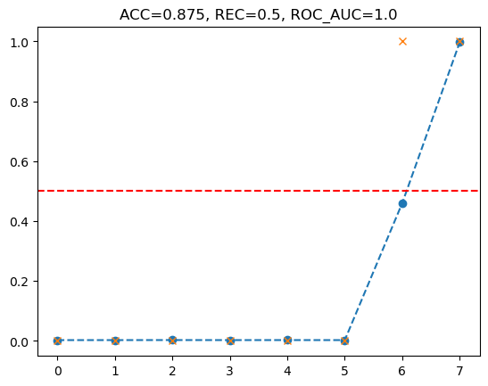
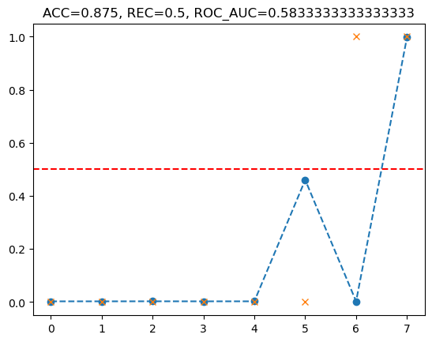

<!DOCTYPE html>
<html xmlns="http://www.w3.org/1999/xhtml" lang="en" xml:lang="en"><head>

<meta charset="utf-8">
<meta name="generator" content="quarto-1.4.533">

<meta name="viewport" content="width=device-width, initial-scale=1.0, user-scalable=yes">

<meta name="author" content="최규빈">
<meta name="dcterms.date" content="2024-12-03">

<title>MP2024 - 12wk-1: 선인장 이미지 분류</title>
<style>
code{white-space: pre-wrap;}
span.smallcaps{font-variant: small-caps;}
div.columns{display: flex; gap: min(4vw, 1.5em);}
div.column{flex: auto; overflow-x: auto;}
div.hanging-indent{margin-left: 1.5em; text-indent: -1.5em;}
ul.task-list{list-style: none;}
ul.task-list li input[type="checkbox"] {
  width: 0.8em;
  margin: 0 0.8em 0.2em -1em; /* quarto-specific, see https://github.com/quarto-dev/quarto-cli/issues/4556 */ 
  vertical-align: middle;
}
/* CSS for syntax highlighting */
pre > code.sourceCode { white-space: pre; position: relative; }
pre > code.sourceCode > span { line-height: 1.25; }
pre > code.sourceCode > span:empty { height: 1.2em; }
.sourceCode { overflow: visible; }
code.sourceCode > span { color: inherit; text-decoration: inherit; }
div.sourceCode { margin: 1em 0; }
pre.sourceCode { margin: 0; }
@media screen {
div.sourceCode { overflow: auto; }
}
@media print {
pre > code.sourceCode { white-space: pre-wrap; }
pre > code.sourceCode > span { text-indent: -5em; padding-left: 5em; }
}
pre.numberSource code
  { counter-reset: source-line 0; }
pre.numberSource code > span
  { position: relative; left: -4em; counter-increment: source-line; }
pre.numberSource code > span > a:first-child::before
  { content: counter(source-line);
    position: relative; left: -1em; text-align: right; vertical-align: baseline;
    border: none; display: inline-block;
    -webkit-touch-callout: none; -webkit-user-select: none;
    -khtml-user-select: none; -moz-user-select: none;
    -ms-user-select: none; user-select: none;
    padding: 0 4px; width: 4em;
  }
pre.numberSource { margin-left: 3em;  padding-left: 4px; }
div.sourceCode
  {   }
@media screen {
pre > code.sourceCode > span > a:first-child::before { text-decoration: underline; }
}
</style>


<script src="https://cdnjs.cloudflare.com/ajax/libs/jquery/3.5.1/jquery.min.js" integrity="sha512-bLT0Qm9VnAYZDflyKcBaQ2gg0hSYNQrJ8RilYldYQ1FxQYoCLtUjuuRuZo+fjqhx/qtq/1itJ0C2ejDxltZVFg==" crossorigin="anonymous"></script><script src="../site_libs/quarto-nav/quarto-nav.js"></script>
<script src="../site_libs/quarto-nav/headroom.min.js"></script>
<script src="../site_libs/clipboard/clipboard.min.js"></script>
<script src="../site_libs/quarto-search/autocomplete.umd.js"></script>
<script src="../site_libs/quarto-search/fuse.min.js"></script>
<script src="../site_libs/quarto-search/quarto-search.js"></script>
<meta name="quarto:offset" content="../">
<script src="../site_libs/quarto-html/quarto.js"></script>
<script src="../site_libs/quarto-html/popper.min.js"></script>
<script src="../site_libs/quarto-html/tippy.umd.min.js"></script>
<script src="../site_libs/quarto-html/anchor.min.js"></script>
<link href="../site_libs/quarto-html/tippy.css" rel="stylesheet">
<link href="../site_libs/quarto-html/quarto-syntax-highlighting.css" rel="stylesheet" id="quarto-text-highlighting-styles">
<script src="../site_libs/bootstrap/bootstrap.min.js"></script>
<link href="../site_libs/bootstrap/bootstrap-icons.css" rel="stylesheet">
<link href="../site_libs/bootstrap/bootstrap.min.css" rel="stylesheet" id="quarto-bootstrap" data-mode="light">
<script id="quarto-search-options" type="application/json">{
  "location": "navbar",
  "copy-button": false,
  "collapse-after": 3,
  "panel-placement": "end",
  "type": "overlay",
  "limit": 50,
  "keyboard-shortcut": [
    "f",
    "/",
    "s"
  ],
  "show-item-context": false,
  "language": {
    "search-no-results-text": "No results",
    "search-matching-documents-text": "matching documents",
    "search-copy-link-title": "Copy link to search",
    "search-hide-matches-text": "Hide additional matches",
    "search-more-match-text": "more match in this document",
    "search-more-matches-text": "more matches in this document",
    "search-clear-button-title": "Clear",
    "search-text-placeholder": "",
    "search-detached-cancel-button-title": "Cancel",
    "search-submit-button-title": "Submit",
    "search-label": "Search"
  }
}</script>
<script src="https://cdnjs.cloudflare.com/ajax/libs/require.js/2.3.6/require.min.js" integrity="sha512-c3Nl8+7g4LMSTdrm621y7kf9v3SDPnhxLNhcjFJbKECVnmZHTdo+IRO05sNLTH/D3vA6u1X32ehoLC7WFVdheg==" crossorigin="anonymous"></script>

<script type="application/javascript">define('jquery', [],function() {return window.jQuery;})</script>

  <script src="https://polyfill.io/v3/polyfill.min.js?features=es6"></script>
  <script src="https://cdn.jsdelivr.net/npm/mathjax@3/es5/tex-chtml-full.js" type="text/javascript"></script>

<script type="text/javascript">
const typesetMath = (el) => {
  if (window.MathJax) {
    // MathJax Typeset
    window.MathJax.typeset([el]);
  } else if (window.katex) {
    // KaTeX Render
    var mathElements = el.getElementsByClassName("math");
    var macros = [];
    for (var i = 0; i < mathElements.length; i++) {
      var texText = mathElements[i].firstChild;
      if (mathElements[i].tagName == "SPAN") {
        window.katex.render(texText.data, mathElements[i], {
          displayMode: mathElements[i].classList.contains('display'),
          throwOnError: false,
          macros: macros,
          fleqn: false
        });
      }
    }
  }
}
window.Quarto = {
  typesetMath
};
</script>

<link rel="stylesheet" href="../styles.css">
</head>

<body class="nav-fixed">

<div id="quarto-search-results"></div>
  <header id="quarto-header" class="headroom fixed-top">
    <nav class="navbar navbar-expand-lg " data-bs-theme="dark">
      <div class="navbar-container container-fluid">
      <div class="navbar-brand-container mx-auto">
    <a class="navbar-brand" href="../index.html">
    <span class="navbar-title">MP2024</span>
    </a>
  </div>
            <div id="quarto-search" class="" title="Search"></div>
          <button class="navbar-toggler" type="button" data-bs-toggle="collapse" data-bs-target="#navbarCollapse" aria-controls="navbarCollapse" aria-expanded="false" aria-label="Toggle navigation" onclick="if (window.quartoToggleHeadroom) { window.quartoToggleHeadroom(); }">
  <span class="navbar-toggler-icon"></span>
</button>
          <div class="collapse navbar-collapse" id="navbarCollapse">
            <ul class="navbar-nav navbar-nav-scroll me-auto">
  <li class="nav-item">
    <a class="nav-link" href="../quiz.html"> 
<span class="menu-text"><strong>Quiz &amp; Report</strong></span></a>
  </li>  
</ul>
            <ul class="navbar-nav navbar-nav-scroll ms-auto">
  <li class="nav-item compact">
    <a class="nav-link" href="https://github.com/guebin/MP2024"> <i class="bi bi-github" role="img">
</i> 
<span class="menu-text"></span></a>
  </li>  
  <li class="nav-item compact">
    <a class="nav-link" href="https://www.youtube.com/channel/UCQk9RyBNgXc7ORIsYlOfQrg/playlists?view=50&amp;sort=dd&amp;shelf_id=2"> <i class="bi bi-youtube" role="img">
</i> 
<span class="menu-text"></span></a>
  </li>  
</ul>
          </div> <!-- /navcollapse -->
          <div class="quarto-navbar-tools">
</div>
      </div> <!-- /container-fluid -->
    </nav>
</header>
<!-- content -->
<div id="quarto-content" class="quarto-container page-columns page-rows-contents page-layout-article page-navbar">
<!-- sidebar -->
<!-- margin-sidebar -->
    <div id="quarto-margin-sidebar" class="sidebar margin-sidebar">
        <nav id="TOC" role="doc-toc" class="toc-active">
    <h2 id="toc-title">On this page</h2>
   
  <ul>
  <li><a href="#강의영상" id="toc-강의영상" class="nav-link active" data-scroll-target="#강의영상">1. 강의영상</a></li>
  <li><a href="#imports" id="toc-imports" class="nav-link" data-scroll-target="#imports">2. imports</a></li>
  <li><a href="#kaggle" id="toc-kaggle" class="nav-link" data-scroll-target="#kaggle">3. Kaggle</a>
  <ul class="collapse">
  <li><a href="#a.-ref" id="toc-a.-ref" class="nav-link" data-scroll-target="#a.-ref">A. ref</a></li>
  <li><a href="#b.-압축해제" id="toc-b.-압축해제" class="nav-link" data-scroll-target="#b.-압축해제">B. 압축해제</a></li>
  <li><a href="#c.-데이터-살펴보기" id="toc-c.-데이터-살펴보기" class="nav-link" data-scroll-target="#c.-데이터-살펴보기">C. 데이터 살펴보기</a></li>
  </ul></li>
  <li><a href="#logits의-이해" id="toc-logits의-이해" class="nav-link" data-scroll-target="#logits의-이해">4. Logits의 이해</a>
  <ul class="collapse">
  <li><a href="#a.-로짓의-의미" id="toc-a.-로짓의-의미" class="nav-link" data-scroll-target="#a.-로짓의-의미">A. 로짓의 의미</a></li>
  <li><a href="#b.-로짓-to-예측클래스" id="toc-b.-로짓-to-예측클래스" class="nav-link" data-scroll-target="#b.-로짓-to-예측클래스">B. 로짓 <span class="math inline">\(\to\)</span> 예측클래스</a></li>
  <li><a href="#c.-로짓-to-예측확률" id="toc-c.-로짓-to-예측확률" class="nav-link" data-scroll-target="#c.-로짓-to-예측확률">C. 로짓 <span class="math inline">\(\to\)</span> 예측확률</a></li>
  </ul></li>
  <li><a href="#평가지표" id="toc-평가지표" class="nav-link" data-scroll-target="#평가지표">5. 평가지표</a>
  <ul class="collapse">
  <li><a href="#a.-accuracy-계산" id="toc-a.-accuracy-계산" class="nav-link" data-scroll-target="#a.-accuracy-계산">A. accuracy 계산</a></li>
  <li><a href="#b.-recall-계산" id="toc-b.-recall-계산" class="nav-link" data-scroll-target="#b.-recall-계산">B. recall 계산</a></li>
  <li><a href="#c.-auc-계산" id="toc-c.-auc-계산" class="nav-link" data-scroll-target="#c.-auc-계산">C. auc 계산</a></li>
  </ul></li>
  <li><a href="#분석" id="toc-분석" class="nav-link" data-scroll-target="#분석">6. 분석</a>
  <ul class="collapse">
  <li><a href="#a.-예쁜-정석-코드" id="toc-a.-예쁜-정석-코드" class="nav-link" data-scroll-target="#a.-예쁜-정석-코드">A. 예쁜(?) 정석 코드</a></li>
  <li><a href="#b.-자유로운-코드" id="toc-b.-자유로운-코드" class="nav-link" data-scroll-target="#b.-자유로운-코드">B. 자유로운 코드</a></li>
  </ul></li>
  </ul>
<div class="quarto-alternate-formats"><h2>Other Formats</h2><ul><li><a href="12wk-1.out.ipynb" download="12wk-1.out.ipynb"><i class="bi bi-journal-code"></i>Jupyter</a></li></ul></div></nav>
    </div>
<!-- main -->
<main class="content" id="quarto-document-content">

<header id="title-block-header" class="quarto-title-block default">
<div class="quarto-title">
<h1 class="title">12wk-1: 선인장 이미지 분류</h1>
</div>


<div class="quarto-title-meta">

    <div>
    <div class="quarto-title-meta-heading">Author</div>
    <div class="quarto-title-meta-contents">
             <p>최규빈 </p>
          </div>
  </div>
    
    <div>
    <div class="quarto-title-meta-heading">Published</div>
    <div class="quarto-title-meta-contents">
      <p class="date">December 3, 2024</p>
    </div>
  </div>
  
    
  </div>
  


</header>


<p><a href="https://colab.research.google.com/github/guebin/MP2024/blob/main/posts/12wk-1.ipynb"></a></p>
<section id="강의영상" class="level1">
<h1>1. 강의영상</h1>
</section>
<section id="imports" class="level1">
<h1>2. imports</h1>
<div id="cell-4" class="cell" data-execution_count="300">
<div class="sourceCode cell-code" id="cb1"><pre class="sourceCode python code-with-copy"><code class="sourceCode python"><span id="cb1-1"><a href="#cb1-1" aria-hidden="true" tabindex="-1"></a><span class="im">import</span> numpy <span class="im">as</span> np</span>
<span id="cb1-2"><a href="#cb1-2" aria-hidden="true" tabindex="-1"></a><span class="im">import</span> pandas <span class="im">as</span> pd </span>
<span id="cb1-3"><a href="#cb1-3" aria-hidden="true" tabindex="-1"></a><span class="im">import</span> zipfile</span>
<span id="cb1-4"><a href="#cb1-4" aria-hidden="true" tabindex="-1"></a><span class="im">import</span> os</span>
<span id="cb1-5"><a href="#cb1-5" aria-hidden="true" tabindex="-1"></a><span class="im">import</span> PIL.Image</span>
<span id="cb1-6"><a href="#cb1-6" aria-hidden="true" tabindex="-1"></a><span class="im">import</span> matplotlib.pyplot <span class="im">as</span> plt</span>
<span id="cb1-7"><a href="#cb1-7" aria-hidden="true" tabindex="-1"></a><span class="co">#---#</span></span>
<span id="cb1-8"><a href="#cb1-8" aria-hidden="true" tabindex="-1"></a><span class="im">import</span> datasets</span>
<span id="cb1-9"><a href="#cb1-9" aria-hidden="true" tabindex="-1"></a><span class="im">import</span> transformers</span>
<span id="cb1-10"><a href="#cb1-10" aria-hidden="true" tabindex="-1"></a><span class="im">import</span> torchvision.transforms</span>
<span id="cb1-11"><a href="#cb1-11" aria-hidden="true" tabindex="-1"></a><span class="im">import</span> evaluate</span>
<span id="cb1-12"><a href="#cb1-12" aria-hidden="true" tabindex="-1"></a><span class="im">import</span> torch</span></code><button title="Copy to Clipboard" class="code-copy-button"><i class="bi"></i></button></pre></div>
</div>
</section>
<section id="kaggle" class="level1">
<h1>3. Kaggle</h1>
<section id="a.-ref" class="level2">
<h2 class="anchored" data-anchor-id="a.-ref">A. ref</h2>
<p>ref: <a href="https://www.kaggle.com/c/aerial-cactus-identification" class="uri">https://www.kaggle.com/c/aerial-cactus-identification</a></p>
</section>
<section id="b.-압축해제" class="level2">
<h2 class="anchored" data-anchor-id="b.-압축해제">B. 압축해제</h2>
</section>
<section id="c.-데이터-살펴보기" class="level2">
<h2 class="anchored" data-anchor-id="c.-데이터-살펴보기">C. 데이터 살펴보기</h2>
</section>
</section>
<section id="logits의-이해" class="level1">
<h1>4. Logits의 이해</h1>
<section id="a.-로짓의-의미" class="level2">
<h2 class="anchored" data-anchor-id="a.-로짓의-의미">A. 로짓의 의미</h2>
<p><code>-</code> 로짓의 이해: 클래스가 2개인 자료에 대한 분류문제를 푼다고 하자. 3개의 observation/examples 에 대한 로짓값이 아래와 같다고 하자.</p>
<div id="cell-15" class="cell" data-execution_count="129">
<div class="sourceCode cell-code" id="cb2"><pre class="sourceCode python code-with-copy"><code class="sourceCode python"><span id="cb2-1"><a href="#cb2-1" aria-hidden="true" tabindex="-1"></a>logits <span class="op">=</span> np.array(</span>
<span id="cb2-2"><a href="#cb2-2" aria-hidden="true" tabindex="-1"></a>    [[ <span class="fl">2.7346244</span>, <span class="op">-</span><span class="fl">3.1177292</span>],</span>
<span id="cb2-3"><a href="#cb2-3" aria-hidden="true" tabindex="-1"></a>     [ <span class="fl">2.7103324</span>, <span class="op">-</span><span class="fl">3.1362345</span>],</span>
<span id="cb2-4"><a href="#cb2-4" aria-hidden="true" tabindex="-1"></a>     [ <span class="fl">2.7464483</span>, <span class="op">-</span><span class="fl">3.0521457</span>],</span>
<span id="cb2-5"><a href="#cb2-5" aria-hidden="true" tabindex="-1"></a>     [ <span class="fl">2.7195318</span>, <span class="op">-</span><span class="fl">3.122628</span> ],</span>
<span id="cb2-6"><a href="#cb2-6" aria-hidden="true" tabindex="-1"></a>     [ <span class="fl">2.7138977</span>, <span class="op">-</span><span class="fl">3.1041346</span>],</span>
<span id="cb2-7"><a href="#cb2-7" aria-hidden="true" tabindex="-1"></a>     [ <span class="fl">2.7398622</span>, <span class="op">-</span><span class="fl">3.1098123</span>],</span>
<span id="cb2-8"><a href="#cb2-8" aria-hidden="true" tabindex="-1"></a>     [ <span class="fl">0.0657177</span>, <span class="op">-</span><span class="fl">0.0930362</span>],</span>
<span id="cb2-9"><a href="#cb2-9" aria-hidden="true" tabindex="-1"></a>     [<span class="op">-</span><span class="fl">2.7668718</span>,  <span class="fl">3.0918367</span>]]</span>
<span id="cb2-10"><a href="#cb2-10" aria-hidden="true" tabindex="-1"></a>)</span>
<span id="cb2-11"><a href="#cb2-11" aria-hidden="true" tabindex="-1"></a>logits</span></code><button title="Copy to Clipboard" class="code-copy-button"><i class="bi"></i></button></pre></div>
<div class="cell-output cell-output-display" data-execution_count="129">
<pre><code>array([[ 2.7346244, -3.1177292],
       [ 2.7103324, -3.1362345],
       [ 2.7464483, -3.0521457],
       [ 2.7195318, -3.122628 ],
       [ 2.7138977, -3.1041346],
       [ 2.7398622, -3.1098123],
       [ 0.0657177, -0.0930362],
       [-2.7668718,  3.0918367]])</code></pre>
</div>
</div>
<p>로짓값은 일반적으로 <span class="math inline">\((n,k)\)</span>의 차원을 가지며 여기에서 <span class="math inline">\(n\)</span>은 observation의 숫자, <span class="math inline">\(k\)</span>는 클래스의 숫자를 의미한다. 이 예제의 경우는 <span class="math inline">\(n=8\)</span>, <span class="math inline">\(k=2\)</span>인 경우이다.</p>
<p>여기에서 각 observation에 대한 로짓값이 의미하는 바를 살펴보면 아래와 같다.</p>
<ol type="1">
<li>첫 번째 관측값 (<code>[2.7346244, -3.1177292]</code>):</li>
</ol>
<ul>
<li>첫 번째 클래스에 대한 확신 정도: <code>2.7346244</code></li>
<li>두 번째 클래스에 대한 확신 정도: <code>-3.1177292</code></li>
</ul>
<ol start="2" type="1">
<li>두 번째 관측값 (<code>[2.7103324,  -3.1362345]</code>):</li>
</ol>
<ul>
<li>첫 번째 클래스에 대한 확신 정도: <code>2.7103324</code></li>
<li>두 번째 클래스에 대한 확신 정도: <code>-3.1362345</code></li>
</ul>
<p>…</p>
<ol start="8" type="1">
<li>마지막 관측값 ([<code>-2.7668718</code>, <code>3.0918367</code>]):</li>
</ol>
<ul>
<li>첫 번째 클래스에 대한 확신 정도: <code>-2.7668718</code></li>
<li>두 번째 클래스에 대한 확신 정도: <code>3.0918367</code></li>
</ul>
</section>
<section id="b.-로짓-to-예측클래스" class="level2">
<h2 class="anchored" data-anchor-id="b.-로짓-to-예측클래스">B. 로짓 <span class="math inline">\(\to\)</span> 예측클래스</h2>
<p><code>-</code> 로짓 <span class="math inline">\(\to\)</span> 예측클래스의 과정을 살펴보자.</p>
<ol type="1">
<li><p>첫 번째 관측값: <span class="math inline">\(2.7346244 &gt; -3.1177292\)</span> <span class="math inline">\(\Rightarrow\)</span> 첫 번째 클래스로 예측</p></li>
<li><p>두 번째 관측값: <span class="math inline">\(2.7103324 &gt; -3.1362345\)</span> <span class="math inline">\(\Rightarrow\)</span> 첫 번째 클래스로 예측</p></li>
</ol>
<p>…</p>
<ol start="8" type="1">
<li>마지막 관측값: <span class="math inline">\(-2.7668718 &lt; 3.0918367\)</span> <span class="math inline">\(\Rightarrow\)</span> 두 번째 클래스로 예측</li>
</ol>
<p><code>-</code> 이것은 아래를 이용하여 구할수도 있다.</p>
</section>
<section id="c.-로짓-to-예측확률" class="level2">
<h2 class="anchored" data-anchor-id="c.-로짓-to-예측확률">C. 로짓 <span class="math inline">\(\to\)</span> 예측확률</h2>
<p><code>-</code> 로짓 <span class="math inline">\(\to\)</span> 예측확률의 과정을 살펴보자.</p>
<p><span class="math inline">\({\boldsymbol u}=\begin{bmatrix} u_1 &amp; \dots &amp; u_k\end{bmatrix}\)</span>를 고정된 observation에 대한 logits값 이라고 하자. 이때 각 클래스에 속할 확률값은 아래와 같이 구한다.</p>
<p><span class="math display">\[\text{prob} =\left[\frac{\exp(u_1)}{\exp(u_1)+\dots+\exp(u_k)}, \cdots,  \frac{\exp(u_k)}{\exp(u_1)+\dots+\exp(u_k)}\right]\]</span></p>
<p><code>-</code> 이 확률은 아래를 통하여 구할수도 있다.</p>
</section>
</section>
<section id="평가지표" class="level1">
<h1>5. 평가지표</h1>
<section id="a.-accuracy-계산" class="level2">
<h2 class="anchored" data-anchor-id="a.-accuracy-계산">A. accuracy 계산</h2>
<p><code>-</code> accuracy의 계산: <code>logits</code>와 <code>labels</code>가 아래와 같이 주어졌다고 하자.</p>
<div id="cell-35" class="cell" data-execution_count="343">
<div class="sourceCode cell-code" id="cb4"><pre class="sourceCode python code-with-copy"><code class="sourceCode python"><span id="cb4-1"><a href="#cb4-1" aria-hidden="true" tabindex="-1"></a>logits <span class="op">=</span> np.array(</span>
<span id="cb4-2"><a href="#cb4-2" aria-hidden="true" tabindex="-1"></a>    [[ <span class="fl">2.7346244</span>, <span class="op">-</span><span class="fl">3.1177292</span>],</span>
<span id="cb4-3"><a href="#cb4-3" aria-hidden="true" tabindex="-1"></a>     [ <span class="fl">2.7103324</span>, <span class="op">-</span><span class="fl">3.1362345</span>],</span>
<span id="cb4-4"><a href="#cb4-4" aria-hidden="true" tabindex="-1"></a>     [ <span class="fl">2.7464483</span>, <span class="op">-</span><span class="fl">3.0521457</span>],</span>
<span id="cb4-5"><a href="#cb4-5" aria-hidden="true" tabindex="-1"></a>     [ <span class="fl">2.7195318</span>, <span class="op">-</span><span class="fl">3.122628</span> ],</span>
<span id="cb4-6"><a href="#cb4-6" aria-hidden="true" tabindex="-1"></a>     [ <span class="fl">2.7138977</span>, <span class="op">-</span><span class="fl">3.1041346</span>],</span>
<span id="cb4-7"><a href="#cb4-7" aria-hidden="true" tabindex="-1"></a>     [ <span class="fl">2.7398622</span>, <span class="op">-</span><span class="fl">3.1098123</span>],</span>
<span id="cb4-8"><a href="#cb4-8" aria-hidden="true" tabindex="-1"></a>     [ <span class="fl">0.0657177</span>, <span class="op">-</span><span class="fl">0.0930362</span>],</span>
<span id="cb4-9"><a href="#cb4-9" aria-hidden="true" tabindex="-1"></a>     [<span class="op">-</span><span class="fl">2.7668718</span>,  <span class="fl">3.0918367</span>]]</span>
<span id="cb4-10"><a href="#cb4-10" aria-hidden="true" tabindex="-1"></a>)</span>
<span id="cb4-11"><a href="#cb4-11" aria-hidden="true" tabindex="-1"></a>references <span class="op">=</span> labels <span class="op">=</span> np.array([<span class="dv">0</span>,<span class="dv">0</span>,<span class="dv">0</span>,<span class="dv">0</span>,<span class="dv">0</span>,<span class="dv">0</span>,<span class="dv">1</span>,<span class="dv">1</span>])</span></code><button title="Copy to Clipboard" class="code-copy-button"><i class="bi"></i></button></pre></div>
</div>
<div id="cell-36" class="cell" data-execution_count="327">
<div class="sourceCode cell-code" id="cb5"><pre class="sourceCode python code-with-copy"><code class="sourceCode python"><span id="cb5-1"><a href="#cb5-1" aria-hidden="true" tabindex="-1"></a>predictions <span class="op">=</span> logits.argmax(axis<span class="op">=</span><span class="dv">1</span>)</span>
<span id="cb5-2"><a href="#cb5-2" aria-hidden="true" tabindex="-1"></a>predictions</span></code><button title="Copy to Clipboard" class="code-copy-button"><i class="bi"></i></button></pre></div>
<div class="cell-output cell-output-display" data-execution_count="327">
<pre><code>array([0, 0, 0, 0, 0, 0, 0, 1])</code></pre>
</div>
</div>
<p>accuracy는 아래와 같이 계산할 수 있다.</p>
<div id="cell-38" class="cell" data-execution_count="328">
<div class="sourceCode cell-code" id="cb7"><pre class="sourceCode python code-with-copy"><code class="sourceCode python"><span id="cb7-1"><a href="#cb7-1" aria-hidden="true" tabindex="-1"></a>(predictions <span class="op">==</span> references).<span class="bu">sum</span>()<span class="op">/</span><span class="dv">8</span></span></code><button title="Copy to Clipboard" class="code-copy-button"><i class="bi"></i></button></pre></div>
<div class="cell-output cell-output-display" data-execution_count="328">
<pre><code>0.875</code></pre>
</div>
</div>
<div id="cell-39" class="cell" data-execution_count="329">
<div class="sourceCode cell-code" id="cb9"><pre class="sourceCode python code-with-copy"><code class="sourceCode python"><span id="cb9-1"><a href="#cb9-1" aria-hidden="true" tabindex="-1"></a>(predictions <span class="op">==</span> references).mean()</span></code><button title="Copy to Clipboard" class="code-copy-button"><i class="bi"></i></button></pre></div>
<div class="cell-output cell-output-display" data-execution_count="329">
<pre><code>0.875</code></pre>
</div>
</div>
<p>이걸 아래와 같이 계산할 수도 있다.</p>
<div id="cell-41" class="cell" data-execution_count="330">
<div class="sourceCode cell-code" id="cb11"><pre class="sourceCode python code-with-copy"><code class="sourceCode python"><span id="cb11-1"><a href="#cb11-1" aria-hidden="true" tabindex="-1"></a>acc <span class="op">=</span> evaluate.load(<span class="st">"accuracy"</span>)</span>
<span id="cb11-2"><a href="#cb11-2" aria-hidden="true" tabindex="-1"></a>acc.compute(predictions<span class="op">=</span>predictions, references<span class="op">=</span>references)</span></code><button title="Copy to Clipboard" class="code-copy-button"><i class="bi"></i></button></pre></div>
<div class="cell-output cell-output-display" data-execution_count="330">
<pre><code>{'accuracy': 0.875}</code></pre>
</div>
</div>
</section>
<section id="b.-recall-계산" class="level2">
<h2 class="anchored" data-anchor-id="b.-recall-계산">B. recall 계산</h2>
<p><code>-</code> 경우에 따라서 1을 얼마나 더 잘맞추는지 알고 싶은 경우도 있다.</p>
<p><span class="math display">\[\frac{\text{실제 라벨이 1인 관측치 중 올바르게 예측된 관측치수}}{\text{실제 라벨이 1인 관측치 수}}\]</span></p>
<div id="cell-44" class="cell" data-execution_count="313">
<div class="sourceCode cell-code" id="cb13"><pre class="sourceCode python code-with-copy"><code class="sourceCode python"><span id="cb13-1"><a href="#cb13-1" aria-hidden="true" tabindex="-1"></a>logits <span class="op">=</span> np.array(</span>
<span id="cb13-2"><a href="#cb13-2" aria-hidden="true" tabindex="-1"></a>    [[ <span class="fl">2.7346244</span>, <span class="op">-</span><span class="fl">3.1177292</span>],</span>
<span id="cb13-3"><a href="#cb13-3" aria-hidden="true" tabindex="-1"></a>     [ <span class="fl">2.7103324</span>, <span class="op">-</span><span class="fl">3.1362345</span>],</span>
<span id="cb13-4"><a href="#cb13-4" aria-hidden="true" tabindex="-1"></a>     [ <span class="fl">2.7464483</span>, <span class="op">-</span><span class="fl">3.0521457</span>],</span>
<span id="cb13-5"><a href="#cb13-5" aria-hidden="true" tabindex="-1"></a>     [ <span class="fl">2.7195318</span>, <span class="op">-</span><span class="fl">3.122628</span> ],</span>
<span id="cb13-6"><a href="#cb13-6" aria-hidden="true" tabindex="-1"></a>     [ <span class="fl">2.7138977</span>, <span class="op">-</span><span class="fl">3.1041346</span>],</span>
<span id="cb13-7"><a href="#cb13-7" aria-hidden="true" tabindex="-1"></a>     [ <span class="fl">2.7398622</span>, <span class="op">-</span><span class="fl">3.1098123</span>],</span>
<span id="cb13-8"><a href="#cb13-8" aria-hidden="true" tabindex="-1"></a>     [ <span class="fl">0.0657177</span>, <span class="op">-</span><span class="fl">0.0930362</span>],</span>
<span id="cb13-9"><a href="#cb13-9" aria-hidden="true" tabindex="-1"></a>     [<span class="op">-</span><span class="fl">2.7668718</span>,  <span class="fl">3.0918367</span>]]</span>
<span id="cb13-10"><a href="#cb13-10" aria-hidden="true" tabindex="-1"></a>)</span>
<span id="cb13-11"><a href="#cb13-11" aria-hidden="true" tabindex="-1"></a>references <span class="op">=</span> labels <span class="op">=</span> np.array([<span class="dv">0</span>,<span class="dv">0</span>,<span class="dv">0</span>,<span class="dv">0</span>,<span class="dv">0</span>,<span class="dv">0</span>,<span class="dv">1</span>,<span class="dv">1</span>])</span></code><button title="Copy to Clipboard" class="code-copy-button"><i class="bi"></i></button></pre></div>
</div>
<div id="cell-45" class="cell" data-execution_count="322">
<div class="sourceCode cell-code" id="cb14"><pre class="sourceCode python code-with-copy"><code class="sourceCode python"><span id="cb14-1"><a href="#cb14-1" aria-hidden="true" tabindex="-1"></a>predictions <span class="op">=</span> logits.argmax(axis<span class="op">=</span><span class="dv">1</span>)</span>
<span id="cb14-2"><a href="#cb14-2" aria-hidden="true" tabindex="-1"></a>predictions</span></code><button title="Copy to Clipboard" class="code-copy-button"><i class="bi"></i></button></pre></div>
<div class="cell-output cell-output-display" data-execution_count="322">
<pre><code>array([0, 0, 0, 0, 0, 0, 0, 1])</code></pre>
</div>
</div>
<div id="cell-46" class="cell" data-execution_count="323">
<div class="sourceCode cell-code" id="cb16"><pre class="sourceCode python code-with-copy"><code class="sourceCode python"><span id="cb16-1"><a href="#cb16-1" aria-hidden="true" tabindex="-1"></a>(predictions[labels<span class="op">==</span><span class="dv">1</span>] <span class="op">==</span> <span class="dv">1</span>).mean()</span></code><button title="Copy to Clipboard" class="code-copy-button"><i class="bi"></i></button></pre></div>
<div class="cell-output cell-output-display" data-execution_count="323">
<pre><code>0.5</code></pre>
</div>
</div>
<p>이것을 아래와 같이 구할수도 있다.</p>
<div id="cell-48" class="cell" data-execution_count="325">
<div class="sourceCode cell-code" id="cb18"><pre class="sourceCode python code-with-copy"><code class="sourceCode python"><span id="cb18-1"><a href="#cb18-1" aria-hidden="true" tabindex="-1"></a>rec <span class="op">=</span> evaluate.load(<span class="st">"recall"</span>)</span>
<span id="cb18-2"><a href="#cb18-2" aria-hidden="true" tabindex="-1"></a>rec.compute(predictions<span class="op">=</span>predictions, references<span class="op">=</span>references)</span></code><button title="Copy to Clipboard" class="code-copy-button"><i class="bi"></i></button></pre></div>
<div class="cell-output cell-output-display" data-execution_count="325">
<pre><code>{'recall': 0.5}</code></pre>
</div>
</div>
</section>
<section id="c.-auc-계산" class="level2">
<h2 class="anchored" data-anchor-id="c.-auc-계산">C. auc 계산</h2>
<p><code>-</code> accuracy 이외의 평가지표들</p>
<ul>
<li><a href="https://guebin.github.io/MP2023/posts/12wk-46.html" class="uri">https://guebin.github.io/MP2023/posts/12wk-46.html</a> // 시험에는 X</li>
</ul>
<p><code>-</code> AUC: 클래스간의 불균형이 있을때 유의미한 평가지표</p>
<div id="cell-52" class="cell" data-execution_count="316">
<div class="sourceCode cell-code" id="cb20"><pre class="sourceCode python code-with-copy"><code class="sourceCode python"><span id="cb20-1"><a href="#cb20-1" aria-hidden="true" tabindex="-1"></a>logits <span class="op">=</span> np.array(</span>
<span id="cb20-2"><a href="#cb20-2" aria-hidden="true" tabindex="-1"></a>    [[ <span class="fl">2.7346244</span>, <span class="op">-</span><span class="fl">3.1177292</span>],</span>
<span id="cb20-3"><a href="#cb20-3" aria-hidden="true" tabindex="-1"></a>     [ <span class="fl">2.7103324</span>, <span class="op">-</span><span class="fl">3.1362345</span>],</span>
<span id="cb20-4"><a href="#cb20-4" aria-hidden="true" tabindex="-1"></a>     [ <span class="fl">2.7464483</span>, <span class="op">-</span><span class="fl">3.0521457</span>],</span>
<span id="cb20-5"><a href="#cb20-5" aria-hidden="true" tabindex="-1"></a>     [ <span class="fl">2.7195318</span>, <span class="op">-</span><span class="fl">3.122628</span> ],</span>
<span id="cb20-6"><a href="#cb20-6" aria-hidden="true" tabindex="-1"></a>     [ <span class="fl">2.7138977</span>, <span class="op">-</span><span class="fl">3.1041346</span>],</span>
<span id="cb20-7"><a href="#cb20-7" aria-hidden="true" tabindex="-1"></a>     [ <span class="fl">2.7398622</span>, <span class="op">-</span><span class="fl">3.1098123</span>],</span>
<span id="cb20-8"><a href="#cb20-8" aria-hidden="true" tabindex="-1"></a>     [ <span class="fl">0.0657177</span>, <span class="op">-</span><span class="fl">0.0930362</span>],</span>
<span id="cb20-9"><a href="#cb20-9" aria-hidden="true" tabindex="-1"></a>     [<span class="op">-</span><span class="fl">2.7668718</span>,  <span class="fl">3.0918367</span>]]</span>
<span id="cb20-10"><a href="#cb20-10" aria-hidden="true" tabindex="-1"></a>)</span>
<span id="cb20-11"><a href="#cb20-11" aria-hidden="true" tabindex="-1"></a>references <span class="op">=</span> labels <span class="op">=</span> np.array([<span class="dv">0</span>,<span class="dv">0</span>,<span class="dv">0</span>,<span class="dv">0</span>,<span class="dv">0</span>,<span class="dv">0</span>,<span class="dv">1</span>,<span class="dv">1</span>])</span></code><button title="Copy to Clipboard" class="code-copy-button"><i class="bi"></i></button></pre></div>
</div>
<div id="cell-53" class="cell" data-execution_count="318">
<div class="sourceCode cell-code" id="cb21"><pre class="sourceCode python code-with-copy"><code class="sourceCode python"><span id="cb21-1"><a href="#cb21-1" aria-hidden="true" tabindex="-1"></a>probabilities <span class="op">=</span> torch.tensor(logits).softmax(dim<span class="op">=</span><span class="dv">1</span>).numpy()</span>
<span id="cb21-2"><a href="#cb21-2" aria-hidden="true" tabindex="-1"></a>prediction_scores <span class="op">=</span> probabilities[:,<span class="dv">1</span>]</span>
<span id="cb21-3"><a href="#cb21-3" aria-hidden="true" tabindex="-1"></a>prediction_scores</span></code><button title="Copy to Clipboard" class="code-copy-button"><i class="bi"></i></button></pre></div>
<div class="cell-output cell-output-display" data-execution_count="318">
<pre><code>array([0.0028649 , 0.00288148, 0.00302265, 0.00289417, 0.00296464,
       0.00287256, 0.46039467, 0.9971532 ])</code></pre>
</div>
</div>
<ul>
<li>0.4 이상부터는 1로 판단한다면? <span class="math inline">\(\to\)</span> 다 맞춘거아니야?</li>
</ul>
<div id="cell-55" class="cell" data-execution_count="320">
<div class="sourceCode cell-code" id="cb23"><pre class="sourceCode python code-with-copy"><code class="sourceCode python"><span id="cb23-1"><a href="#cb23-1" aria-hidden="true" tabindex="-1"></a>roc_auc <span class="op">=</span> evaluate.load(<span class="st">"roc_auc"</span>)</span>
<span id="cb23-2"><a href="#cb23-2" aria-hidden="true" tabindex="-1"></a>roc_auc.compute(references<span class="op">=</span> references, prediction_scores<span class="op">=</span> prediction_scores)</span></code><button title="Copy to Clipboard" class="code-copy-button"><i class="bi"></i></button></pre></div>
<div class="cell-output cell-output-display" data-execution_count="320">
<pre><code>{'roc_auc': 1.0}</code></pre>
</div>
</div>
<p><code># 예제1</code> – 시각화</p>
<div id="cell-57" class="cell" data-execution_count="299">
<div class="sourceCode cell-code" id="cb25"><pre class="sourceCode python code-with-copy"><code class="sourceCode python"><span id="cb25-1"><a href="#cb25-1" aria-hidden="true" tabindex="-1"></a>logits <span class="op">=</span> np.array(</span>
<span id="cb25-2"><a href="#cb25-2" aria-hidden="true" tabindex="-1"></a>    [[ <span class="fl">2.7346244</span>, <span class="op">-</span><span class="fl">3.1177292</span>],</span>
<span id="cb25-3"><a href="#cb25-3" aria-hidden="true" tabindex="-1"></a>     [ <span class="fl">2.7103324</span>, <span class="op">-</span><span class="fl">3.1362345</span>],</span>
<span id="cb25-4"><a href="#cb25-4" aria-hidden="true" tabindex="-1"></a>     [ <span class="fl">2.7464483</span>, <span class="op">-</span><span class="fl">3.0521457</span>],</span>
<span id="cb25-5"><a href="#cb25-5" aria-hidden="true" tabindex="-1"></a>     [ <span class="fl">2.7195318</span>, <span class="op">-</span><span class="fl">3.122628</span> ],</span>
<span id="cb25-6"><a href="#cb25-6" aria-hidden="true" tabindex="-1"></a>     [ <span class="fl">2.7138977</span>, <span class="op">-</span><span class="fl">3.1041346</span>],</span>
<span id="cb25-7"><a href="#cb25-7" aria-hidden="true" tabindex="-1"></a>     [ <span class="fl">2.7398622</span>, <span class="op">-</span><span class="fl">3.1098123</span>],</span>
<span id="cb25-8"><a href="#cb25-8" aria-hidden="true" tabindex="-1"></a>     [ <span class="fl">0.0657177</span>, <span class="op">-</span><span class="fl">0.0930362</span>],</span>
<span id="cb25-9"><a href="#cb25-9" aria-hidden="true" tabindex="-1"></a>     [<span class="op">-</span><span class="fl">2.7668718</span>,  <span class="fl">3.0918367</span>]]</span>
<span id="cb25-10"><a href="#cb25-10" aria-hidden="true" tabindex="-1"></a>)</span>
<span id="cb25-11"><a href="#cb25-11" aria-hidden="true" tabindex="-1"></a>labels <span class="op">=</span> np.array([<span class="dv">0</span>,<span class="dv">0</span>,<span class="dv">0</span>,<span class="dv">0</span>,<span class="dv">0</span>,<span class="dv">0</span>,<span class="dv">1</span>,<span class="dv">1</span>])</span>
<span id="cb25-12"><a href="#cb25-12" aria-hidden="true" tabindex="-1"></a>probabilities <span class="op">=</span> torch.tensor(logits).softmax(dim<span class="op">=</span><span class="dv">1</span>).numpy()</span>
<span id="cb25-13"><a href="#cb25-13" aria-hidden="true" tabindex="-1"></a>plt.plot(probabilities[:,<span class="dv">1</span>],<span class="st">'--o'</span>)</span>
<span id="cb25-14"><a href="#cb25-14" aria-hidden="true" tabindex="-1"></a>plt.plot(labels,<span class="st">'x'</span>)</span>
<span id="cb25-15"><a href="#cb25-15" aria-hidden="true" tabindex="-1"></a>plt.axhline(y<span class="op">=</span><span class="fl">0.5</span>, color<span class="op">=</span><span class="st">'red'</span>, linestyle<span class="op">=</span><span class="st">'--'</span>)</span>
<span id="cb25-16"><a href="#cb25-16" aria-hidden="true" tabindex="-1"></a>roc_auc <span class="op">=</span> evaluate.load(<span class="st">"roc_auc"</span>)</span>
<span id="cb25-17"><a href="#cb25-17" aria-hidden="true" tabindex="-1"></a>acc <span class="op">=</span> evaluate.load(<span class="st">"accuracy"</span>)</span>
<span id="cb25-18"><a href="#cb25-18" aria-hidden="true" tabindex="-1"></a>rec <span class="op">=</span> evaluate.load(<span class="st">"recall"</span>)</span>
<span id="cb25-19"><a href="#cb25-19" aria-hidden="true" tabindex="-1"></a>results <span class="op">=</span> {</span>
<span id="cb25-20"><a href="#cb25-20" aria-hidden="true" tabindex="-1"></a>    <span class="st">'accuracy'</span>: acc.compute(predictions<span class="op">=</span> logits.argmax(axis<span class="op">=</span><span class="dv">1</span>), references<span class="op">=</span>labels)[<span class="st">'accuracy'</span>],</span>
<span id="cb25-21"><a href="#cb25-21" aria-hidden="true" tabindex="-1"></a>    <span class="st">'recall'</span>: rec.compute(predictions<span class="op">=</span> logits.argmax(axis<span class="op">=</span><span class="dv">1</span>), references<span class="op">=</span>labels)[<span class="st">'recall'</span>],</span>
<span id="cb25-22"><a href="#cb25-22" aria-hidden="true" tabindex="-1"></a>    <span class="st">'roc_auc'</span>: roc_auc.compute(references<span class="op">=</span> labels, prediction_scores<span class="op">=</span> probabilities[:,<span class="dv">1</span>])[<span class="st">'roc_auc'</span>]</span>
<span id="cb25-23"><a href="#cb25-23" aria-hidden="true" tabindex="-1"></a>}</span>
<span id="cb25-24"><a href="#cb25-24" aria-hidden="true" tabindex="-1"></a>plt.title(<span class="ss">f"ACC=</span><span class="sc">{</span>results[<span class="st">'accuracy'</span>]<span class="sc">}</span><span class="ss">, REC=</span><span class="sc">{</span>results[<span class="st">'recall'</span>]<span class="sc">}</span><span class="ss">, ROC_AUC=</span><span class="sc">{</span>results[<span class="st">'roc_auc'</span>]<span class="sc">}</span><span class="ss">"</span>)</span></code><button title="Copy to Clipboard" class="code-copy-button"><i class="bi"></i></button></pre></div>
<div class="cell-output cell-output-display" data-execution_count="299">
<pre><code>Text(0.5, 1.0, 'ACC=0.875, REC=0.5, ROC_AUC=1.0')</code></pre>
</div>
<div class="cell-output cell-output-display">
<div>
<figure class="figure">
<p></p>
</figure>
</div>
</div>
</div>
<div id="cell-58" class="cell" data-execution_count="301">
<div class="sourceCode cell-code" id="cb27"><pre class="sourceCode python code-with-copy"><code class="sourceCode python"><span id="cb27-1"><a href="#cb27-1" aria-hidden="true" tabindex="-1"></a>logits <span class="op">=</span> np.array(</span>
<span id="cb27-2"><a href="#cb27-2" aria-hidden="true" tabindex="-1"></a>    [[ <span class="fl">2.7346244</span>, <span class="op">-</span><span class="fl">3.1177292</span>],</span>
<span id="cb27-3"><a href="#cb27-3" aria-hidden="true" tabindex="-1"></a>     [ <span class="fl">2.7103324</span>, <span class="op">-</span><span class="fl">3.1362345</span>],</span>
<span id="cb27-4"><a href="#cb27-4" aria-hidden="true" tabindex="-1"></a>     [ <span class="fl">2.7464483</span>, <span class="op">-</span><span class="fl">3.0521457</span>],</span>
<span id="cb27-5"><a href="#cb27-5" aria-hidden="true" tabindex="-1"></a>     [ <span class="fl">2.7195318</span>, <span class="op">-</span><span class="fl">3.122628</span> ],</span>
<span id="cb27-6"><a href="#cb27-6" aria-hidden="true" tabindex="-1"></a>     [ <span class="fl">2.7138977</span>, <span class="op">-</span><span class="fl">3.1041346</span>],</span>
<span id="cb27-7"><a href="#cb27-7" aria-hidden="true" tabindex="-1"></a>     [ <span class="fl">0.0657177</span>, <span class="op">-</span><span class="fl">0.0930362</span>],     </span>
<span id="cb27-8"><a href="#cb27-8" aria-hidden="true" tabindex="-1"></a>     [ <span class="fl">2.7398622</span>, <span class="op">-</span><span class="fl">3.1098123</span>],</span>
<span id="cb27-9"><a href="#cb27-9" aria-hidden="true" tabindex="-1"></a>     [<span class="op">-</span><span class="fl">2.7668718</span>,  <span class="fl">3.0918367</span>]]</span>
<span id="cb27-10"><a href="#cb27-10" aria-hidden="true" tabindex="-1"></a>)</span>
<span id="cb27-11"><a href="#cb27-11" aria-hidden="true" tabindex="-1"></a>labels <span class="op">=</span> np.array([<span class="dv">0</span>,<span class="dv">0</span>,<span class="dv">0</span>,<span class="dv">0</span>,<span class="dv">0</span>,<span class="dv">0</span>,<span class="dv">1</span>,<span class="dv">1</span>])</span>
<span id="cb27-12"><a href="#cb27-12" aria-hidden="true" tabindex="-1"></a>probabilities <span class="op">=</span> torch.tensor(logits).softmax(dim<span class="op">=</span><span class="dv">1</span>).numpy()</span>
<span id="cb27-13"><a href="#cb27-13" aria-hidden="true" tabindex="-1"></a>plt.plot(probabilities[:,<span class="dv">1</span>],<span class="st">'--o'</span>)</span>
<span id="cb27-14"><a href="#cb27-14" aria-hidden="true" tabindex="-1"></a>plt.plot(labels,<span class="st">'x'</span>)</span>
<span id="cb27-15"><a href="#cb27-15" aria-hidden="true" tabindex="-1"></a>plt.axhline(y<span class="op">=</span><span class="fl">0.5</span>, color<span class="op">=</span><span class="st">'red'</span>, linestyle<span class="op">=</span><span class="st">'--'</span>)</span>
<span id="cb27-16"><a href="#cb27-16" aria-hidden="true" tabindex="-1"></a>roc_auc <span class="op">=</span> evaluate.load(<span class="st">"roc_auc"</span>)</span>
<span id="cb27-17"><a href="#cb27-17" aria-hidden="true" tabindex="-1"></a>acc <span class="op">=</span> evaluate.load(<span class="st">"accuracy"</span>)</span>
<span id="cb27-18"><a href="#cb27-18" aria-hidden="true" tabindex="-1"></a>rec <span class="op">=</span> evaluate.load(<span class="st">"recall"</span>)</span>
<span id="cb27-19"><a href="#cb27-19" aria-hidden="true" tabindex="-1"></a>results <span class="op">=</span> {</span>
<span id="cb27-20"><a href="#cb27-20" aria-hidden="true" tabindex="-1"></a>    <span class="st">'accuracy'</span>: acc.compute(predictions<span class="op">=</span> logits.argmax(axis<span class="op">=</span><span class="dv">1</span>), references<span class="op">=</span>labels)[<span class="st">'accuracy'</span>],</span>
<span id="cb27-21"><a href="#cb27-21" aria-hidden="true" tabindex="-1"></a>    <span class="st">'recall'</span>: rec.compute(predictions<span class="op">=</span> logits.argmax(axis<span class="op">=</span><span class="dv">1</span>), references<span class="op">=</span>labels)[<span class="st">'recall'</span>],</span>
<span id="cb27-22"><a href="#cb27-22" aria-hidden="true" tabindex="-1"></a>    <span class="st">'roc_auc'</span>: roc_auc.compute(references<span class="op">=</span> labels, prediction_scores<span class="op">=</span> probabilities[:,<span class="dv">1</span>])[<span class="st">'roc_auc'</span>]</span>
<span id="cb27-23"><a href="#cb27-23" aria-hidden="true" tabindex="-1"></a>}</span>
<span id="cb27-24"><a href="#cb27-24" aria-hidden="true" tabindex="-1"></a>plt.title(<span class="ss">f"ACC=</span><span class="sc">{</span>results[<span class="st">'accuracy'</span>]<span class="sc">}</span><span class="ss">, REC=</span><span class="sc">{</span>results[<span class="st">'recall'</span>]<span class="sc">}</span><span class="ss">, ROC_AUC=</span><span class="sc">{</span>results[<span class="st">'roc_auc'</span>]<span class="sc">}</span><span class="ss">"</span>)</span></code><button title="Copy to Clipboard" class="code-copy-button"><i class="bi"></i></button></pre></div>
<div class="cell-output cell-output-display" data-execution_count="301">
<pre><code>Text(0.5, 1.0, 'ACC=0.875, REC=0.5, ROC_AUC=0.5833333333333333')</code></pre>
</div>
<div class="cell-output cell-output-display">
<div>
<figure class="figure">
<p></p>
</figure>
</div>
</div>
</div>
</section>
</section>
<section id="분석" class="level1">
<h1>6. 분석</h1>
<p><code>-</code> <code>train.csv</code>를 pandas로</p>
<div id="cell-61" class="cell" data-execution_count="10">
<div class="sourceCode cell-code" id="cb29"><pre class="sourceCode python code-with-copy"><code class="sourceCode python"><span id="cb29-1"><a href="#cb29-1" aria-hidden="true" tabindex="-1"></a>train_csv <span class="op">=</span> pd.read_csv(<span class="st">"./data/train.csv"</span>)</span>
<span id="cb29-2"><a href="#cb29-2" aria-hidden="true" tabindex="-1"></a>train_csv</span></code><button title="Copy to Clipboard" class="code-copy-button"><i class="bi"></i></button></pre></div>
<div class="cell-output cell-output-display" data-execution_count="10">
<div>


<table class="dataframe table table-sm table-striped small" data-quarto-postprocess="true" data-border="1">
<thead>
<tr class="header">
<th data-quarto-table-cell-role="th"></th>
<th data-quarto-table-cell-role="th">id</th>
<th data-quarto-table-cell-role="th">has_cactus</th>
</tr>
</thead>
<tbody>
<tr class="odd">
<td data-quarto-table-cell-role="th">0</td>
<td>0004be2cfeaba1c0361d39e2b000257b.jpg</td>
<td>1</td>
</tr>
<tr class="even">
<td data-quarto-table-cell-role="th">1</td>
<td>000c8a36845c0208e833c79c1bffedd1.jpg</td>
<td>1</td>
</tr>
<tr class="odd">
<td data-quarto-table-cell-role="th">2</td>
<td>000d1e9a533f62e55c289303b072733d.jpg</td>
<td>1</td>
</tr>
<tr class="even">
<td data-quarto-table-cell-role="th">3</td>
<td>0011485b40695e9138e92d0b3fb55128.jpg</td>
<td>1</td>
</tr>
<tr class="odd">
<td data-quarto-table-cell-role="th">4</td>
<td>0014d7a11e90b62848904c1418fc8cf2.jpg</td>
<td>1</td>
</tr>
<tr class="even">
<td data-quarto-table-cell-role="th">...</td>
<td>...</td>
<td>...</td>
</tr>
<tr class="odd">
<td data-quarto-table-cell-role="th">17495</td>
<td>ffede47a74e47a5930f81c0b6896479e.jpg</td>
<td>0</td>
</tr>
<tr class="even">
<td data-quarto-table-cell-role="th">17496</td>
<td>ffef6382a50d23251d4bc05519c91037.jpg</td>
<td>1</td>
</tr>
<tr class="odd">
<td data-quarto-table-cell-role="th">17497</td>
<td>fff059ecc91b30be5745e8b81111dc7b.jpg</td>
<td>1</td>
</tr>
<tr class="even">
<td data-quarto-table-cell-role="th">17498</td>
<td>fff43acb3b7a23edcc4ae937be2b7522.jpg</td>
<td>0</td>
</tr>
<tr class="odd">
<td data-quarto-table-cell-role="th">17499</td>
<td>fffd9e9b990eba07c836745d8aef1a3a.jpg</td>
<td>1</td>
</tr>
</tbody>
</table>

<p>17500 rows × 2 columns</p>
</div>
</div>
</div>
<div id="cell-62" class="cell" data-execution_count="11">
<div class="sourceCode cell-code" id="cb30"><pre class="sourceCode python code-with-copy"><code class="sourceCode python"><span id="cb30-1"><a href="#cb30-1" aria-hidden="true" tabindex="-1"></a>test_csv <span class="op">=</span> pd.read_csv(<span class="st">"./data/sample_submission.csv"</span>)</span>
<span id="cb30-2"><a href="#cb30-2" aria-hidden="true" tabindex="-1"></a>test_csv</span></code><button title="Copy to Clipboard" class="code-copy-button"><i class="bi"></i></button></pre></div>
<div class="cell-output cell-output-display" data-execution_count="11">
<div>


<table class="dataframe table table-sm table-striped small" data-quarto-postprocess="true" data-border="1">
<thead>
<tr class="header">
<th data-quarto-table-cell-role="th"></th>
<th data-quarto-table-cell-role="th">id</th>
<th data-quarto-table-cell-role="th">has_cactus</th>
</tr>
</thead>
<tbody>
<tr class="odd">
<td data-quarto-table-cell-role="th">0</td>
<td>000940378805c44108d287872b2f04ce.jpg</td>
<td>0.5</td>
</tr>
<tr class="even">
<td data-quarto-table-cell-role="th">1</td>
<td>0017242f54ececa4512b4d7937d1e21e.jpg</td>
<td>0.5</td>
</tr>
<tr class="odd">
<td data-quarto-table-cell-role="th">2</td>
<td>001ee6d8564003107853118ab87df407.jpg</td>
<td>0.5</td>
</tr>
<tr class="even">
<td data-quarto-table-cell-role="th">3</td>
<td>002e175c3c1e060769475f52182583d0.jpg</td>
<td>0.5</td>
</tr>
<tr class="odd">
<td data-quarto-table-cell-role="th">4</td>
<td>0036e44a7e8f7218e9bc7bf8137e4943.jpg</td>
<td>0.5</td>
</tr>
<tr class="even">
<td data-quarto-table-cell-role="th">...</td>
<td>...</td>
<td>...</td>
</tr>
<tr class="odd">
<td data-quarto-table-cell-role="th">3995</td>
<td>ffaafd0c9f2f0e73172848463bc2e523.jpg</td>
<td>0.5</td>
</tr>
<tr class="even">
<td data-quarto-table-cell-role="th">3996</td>
<td>ffae37344310a1549162493237d25d3f.jpg</td>
<td>0.5</td>
</tr>
<tr class="odd">
<td data-quarto-table-cell-role="th">3997</td>
<td>ffbd469c56873d064326204aac546e0d.jpg</td>
<td>0.5</td>
</tr>
<tr class="even">
<td data-quarto-table-cell-role="th">3998</td>
<td>ffcb76b7d47f29ece11c751e5f763f52.jpg</td>
<td>0.5</td>
</tr>
<tr class="odd">
<td data-quarto-table-cell-role="th">3999</td>
<td>fffed17d1a8e0433a934db518d7f532c.jpg</td>
<td>0.5</td>
</tr>
</tbody>
</table>

<p>4000 rows × 2 columns</p>
</div>
</div>
</div>
<section id="a.-예쁜-정석-코드" class="level2">
<h2 class="anchored" data-anchor-id="a.-예쁜-정석-코드">A. 예쁜(?) 정석 코드</h2>
<p><em>Step1: Data</em></p>
<div id="cell-65" class="cell" data-execution_count="418">
<div class="sourceCode cell-code" id="cb31"><pre class="sourceCode python code-with-copy"><code class="sourceCode python"><span id="cb31-1"><a href="#cb31-1" aria-hidden="true" tabindex="-1"></a>ctx_train <span class="op">=</span> datasets.Dataset.from_pandas(train_csv)</span>
<span id="cb31-2"><a href="#cb31-2" aria-hidden="true" tabindex="-1"></a>ctx_test <span class="op">=</span> datasets.Dataset.from_pandas(test_csv).remove_columns([<span class="st">'has_cactus'</span>])</span></code><button title="Copy to Clipboard" class="code-copy-button"><i class="bi"></i></button></pre></div>
</div>
<div id="cell-66" class="cell" data-execution_count="419">
<div class="sourceCode cell-code" id="cb32"><pre class="sourceCode python code-with-copy"><code class="sourceCode python"><span id="cb32-1"><a href="#cb32-1" aria-hidden="true" tabindex="-1"></a>ctx_train <span class="op">=</span> ctx_train.<span class="bu">map</span>(<span class="kw">lambda</span> example: {<span class="st">'path'</span>: <span class="ss">f'./data/train/</span><span class="sc">{</span>example[<span class="st">'id'</span>]<span class="sc">}</span><span class="ss">'</span>})</span>
<span id="cb32-2"><a href="#cb32-2" aria-hidden="true" tabindex="-1"></a>ctx_test <span class="op">=</span> ctx_test.<span class="bu">map</span>(<span class="kw">lambda</span> example: {<span class="st">'path'</span>: <span class="ss">f'./data/test/</span><span class="sc">{</span>example[<span class="st">'id'</span>]<span class="sc">}</span><span class="ss">'</span>})</span></code><button title="Copy to Clipboard" class="code-copy-button"><i class="bi"></i></button></pre></div>
<div class="cell-output cell-output-stderr">
<pre><code>Map: 100%|██████████████████████| 17500/17500 [00:00&lt;00:00, 65880.11 examples/s]
Map: 100%|████████████████████████| 4000/4000 [00:00&lt;00:00, 92217.97 examples/s]</code></pre>
</div>
</div>
<div id="cell-67" class="cell" data-execution_count="420">
<div class="sourceCode cell-code" id="cb34"><pre class="sourceCode python code-with-copy"><code class="sourceCode python"><span id="cb34-1"><a href="#cb34-1" aria-hidden="true" tabindex="-1"></a>ctx <span class="op">=</span> datasets.DatasetDict({<span class="st">'train'</span>:ctx_train,<span class="st">'test'</span>:ctx_test})</span>
<span id="cb34-2"><a href="#cb34-2" aria-hidden="true" tabindex="-1"></a>ctx</span></code><button title="Copy to Clipboard" class="code-copy-button"><i class="bi"></i></button></pre></div>
<div class="cell-output cell-output-display" data-execution_count="420">
<pre><code>DatasetDict({
    train: Dataset({
        features: ['id', 'has_cactus', 'path'],
        num_rows: 17500
    })
    test: Dataset({
        features: ['id', 'path'],
        num_rows: 4000
    })
})</code></pre>
</div>
</div>
<div id="cell-68" class="cell" data-execution_count="421">
<div class="sourceCode cell-code" id="cb36"><pre class="sourceCode python code-with-copy"><code class="sourceCode python"><span id="cb36-1"><a href="#cb36-1" aria-hidden="true" tabindex="-1"></a>compose(<span class="st">'./data/train/0004be2cfeaba1c0361d39e2b000257b.jpg'</span>)</span></code><button title="Copy to Clipboard" class="code-copy-button"><i class="bi"></i></button></pre></div>
<div class="cell-output cell-output-display" data-execution_count="421">
<pre><code>tensor([[[0.5333, 0.5333, 0.5333,  ..., 0.6157, 0.6157, 0.6157],
         [0.5333, 0.5333, 0.5333,  ..., 0.6157, 0.6157, 0.6157],
         [0.5333, 0.5333, 0.5333,  ..., 0.6157, 0.6157, 0.6157],
         ...,
         [0.7176, 0.7176, 0.7176,  ..., 0.5451, 0.5451, 0.5451],
         [0.7176, 0.7176, 0.7176,  ..., 0.5451, 0.5451, 0.5451],
         [0.7176, 0.7176, 0.7176,  ..., 0.5451, 0.5451, 0.5451]],

        [[0.5412, 0.5412, 0.5412,  ..., 0.5255, 0.5255, 0.5255],
         [0.5412, 0.5412, 0.5412,  ..., 0.5255, 0.5255, 0.5255],
         [0.5412, 0.5412, 0.5412,  ..., 0.5255, 0.5255, 0.5255],
         ...,
         [0.6157, 0.6157, 0.6157,  ..., 0.4314, 0.4314, 0.4314],
         [0.6157, 0.6157, 0.6157,  ..., 0.4314, 0.4314, 0.4314],
         [0.6157, 0.6157, 0.6157,  ..., 0.4314, 0.4314, 0.4314]],

        [[0.4902, 0.4902, 0.4902,  ..., 0.5490, 0.5490, 0.5490],
         [0.4902, 0.4902, 0.4902,  ..., 0.5490, 0.5490, 0.5490],
         [0.4902, 0.4902, 0.4902,  ..., 0.5490, 0.5490, 0.5490],
         ...,
         [0.6588, 0.6588, 0.6588,  ..., 0.5098, 0.5098, 0.5098],
         [0.6588, 0.6588, 0.6588,  ..., 0.5098, 0.5098, 0.5098],
         [0.6588, 0.6588, 0.6588,  ..., 0.5098, 0.5098, 0.5098]]])</code></pre>
</div>
</div>
<div id="cell-69" class="cell" data-execution_count="422">
<div class="sourceCode cell-code" id="cb38"><pre class="sourceCode python code-with-copy"><code class="sourceCode python"><span id="cb38-1"><a href="#cb38-1" aria-hidden="true" tabindex="-1"></a>compose <span class="op">=</span> torchvision.transforms.Compose([</span>
<span id="cb38-2"><a href="#cb38-2" aria-hidden="true" tabindex="-1"></a>    <span class="kw">lambda</span> path: PIL.Image.<span class="bu">open</span>(path),</span>
<span id="cb38-3"><a href="#cb38-3" aria-hidden="true" tabindex="-1"></a>    torchvision.transforms.ToTensor(),</span>
<span id="cb38-4"><a href="#cb38-4" aria-hidden="true" tabindex="-1"></a>    torchvision.transforms.Resize(<span class="dv">224</span>),</span>
<span id="cb38-5"><a href="#cb38-5" aria-hidden="true" tabindex="-1"></a>])</span>
<span id="cb38-6"><a href="#cb38-6" aria-hidden="true" tabindex="-1"></a><span class="kw">def</span> w_trans(examples):</span>
<span id="cb38-7"><a href="#cb38-7" aria-hidden="true" tabindex="-1"></a>    dct <span class="op">=</span> <span class="bu">dict</span>()</span>
<span id="cb38-8"><a href="#cb38-8" aria-hidden="true" tabindex="-1"></a>    <span class="cf">try</span>: </span>
<span id="cb38-9"><a href="#cb38-9" aria-hidden="true" tabindex="-1"></a>        dct[<span class="st">'labels'</span>] <span class="op">=</span> torch.tensor(examples[<span class="st">'has_cactus'</span>]).<span class="bu">long</span>()</span>
<span id="cb38-10"><a href="#cb38-10" aria-hidden="true" tabindex="-1"></a>    <span class="cf">except</span>: </span>
<span id="cb38-11"><a href="#cb38-11" aria-hidden="true" tabindex="-1"></a>        <span class="cf">pass</span> </span>
<span id="cb38-12"><a href="#cb38-12" aria-hidden="true" tabindex="-1"></a>    dct[<span class="st">'pixel_values'</span>] <span class="op">=</span> torch.stack(<span class="bu">list</span>(<span class="bu">map</span>(compose,examples[<span class="st">'path'</span>]))).<span class="bu">float</span>() <span class="co"># 명확하게</span></span>
<span id="cb38-13"><a href="#cb38-13" aria-hidden="true" tabindex="-1"></a>    <span class="cf">return</span> dct </span></code><button title="Copy to Clipboard" class="code-copy-button"><i class="bi"></i></button></pre></div>
</div>
<div id="cell-70" class="cell" data-execution_count="423">
<div class="sourceCode cell-code" id="cb39"><pre class="sourceCode python code-with-copy"><code class="sourceCode python"><span id="cb39-1"><a href="#cb39-1" aria-hidden="true" tabindex="-1"></a>ctx <span class="op">=</span> ctx.with_transform(w_trans)</span>
<span id="cb39-2"><a href="#cb39-2" aria-hidden="true" tabindex="-1"></a>ctx</span></code><button title="Copy to Clipboard" class="code-copy-button"><i class="bi"></i></button></pre></div>
<div class="cell-output cell-output-display" data-execution_count="423">
<pre><code>DatasetDict({
    train: Dataset({
        features: ['id', 'has_cactus', 'path'],
        num_rows: 17500
    })
    test: Dataset({
        features: ['id', 'path'],
        num_rows: 4000
    })
})</code></pre>
</div>
</div>
<div id="cell-71" class="cell" data-execution_count="424">
<div class="sourceCode cell-code" id="cb41"><pre class="sourceCode python code-with-copy"><code class="sourceCode python"><span id="cb41-1"><a href="#cb41-1" aria-hidden="true" tabindex="-1"></a>ctx[<span class="st">'train'</span>][:<span class="dv">2</span>]</span></code><button title="Copy to Clipboard" class="code-copy-button"><i class="bi"></i></button></pre></div>
<div class="cell-output cell-output-display" data-execution_count="424">
<pre><code>{'labels': tensor([1, 1]),
 'pixel_values': tensor([[[[0.5333, 0.5333, 0.5333,  ..., 0.6157, 0.6157, 0.6157],
           [0.5333, 0.5333, 0.5333,  ..., 0.6157, 0.6157, 0.6157],
           [0.5333, 0.5333, 0.5333,  ..., 0.6157, 0.6157, 0.6157],
           ...,
           [0.7176, 0.7176, 0.7176,  ..., 0.5451, 0.5451, 0.5451],
           [0.7176, 0.7176, 0.7176,  ..., 0.5451, 0.5451, 0.5451],
           [0.7176, 0.7176, 0.7176,  ..., 0.5451, 0.5451, 0.5451]],
 
          [[0.5412, 0.5412, 0.5412,  ..., 0.5255, 0.5255, 0.5255],
           [0.5412, 0.5412, 0.5412,  ..., 0.5255, 0.5255, 0.5255],
           [0.5412, 0.5412, 0.5412,  ..., 0.5255, 0.5255, 0.5255],
           ...,
           [0.6157, 0.6157, 0.6157,  ..., 0.4314, 0.4314, 0.4314],
           [0.6157, 0.6157, 0.6157,  ..., 0.4314, 0.4314, 0.4314],
           [0.6157, 0.6157, 0.6157,  ..., 0.4314, 0.4314, 0.4314]],
 
          [[0.4902, 0.4902, 0.4902,  ..., 0.5490, 0.5490, 0.5490],
           [0.4902, 0.4902, 0.4902,  ..., 0.5490, 0.5490, 0.5490],
           [0.4902, 0.4902, 0.4902,  ..., 0.5490, 0.5490, 0.5490],
           ...,
           [0.6588, 0.6588, 0.6588,  ..., 0.5098, 0.5098, 0.5098],
           [0.6588, 0.6588, 0.6588,  ..., 0.5098, 0.5098, 0.5098],
           [0.6588, 0.6588, 0.6588,  ..., 0.5098, 0.5098, 0.5098]]],
 
 
         [[[0.4627, 0.4627, 0.4627,  ..., 0.4824, 0.4824, 0.4824],
           [0.4627, 0.4627, 0.4627,  ..., 0.4824, 0.4824, 0.4824],
           [0.4627, 0.4627, 0.4627,  ..., 0.4824, 0.4824, 0.4824],
           ...,
           [0.3647, 0.3647, 0.3647,  ..., 0.4941, 0.4941, 0.4941],
           [0.3647, 0.3647, 0.3647,  ..., 0.4941, 0.4941, 0.4941],
           [0.3647, 0.3647, 0.3647,  ..., 0.4941, 0.4941, 0.4941]],
 
          [[0.4275, 0.4275, 0.4275,  ..., 0.3804, 0.3804, 0.3804],
           [0.4275, 0.4275, 0.4275,  ..., 0.3804, 0.3804, 0.3804],
           [0.4275, 0.4275, 0.4275,  ..., 0.3804, 0.3804, 0.3804],
           ...,
           [0.3059, 0.3059, 0.3059,  ..., 0.4314, 0.4314, 0.4314],
           [0.3059, 0.3059, 0.3059,  ..., 0.4314, 0.4314, 0.4314],
           [0.3059, 0.3059, 0.3059,  ..., 0.4314, 0.4314, 0.4314]],
 
          [[0.4471, 0.4471, 0.4471,  ..., 0.4235, 0.4235, 0.4235],
           [0.4471, 0.4471, 0.4471,  ..., 0.4235, 0.4235, 0.4235],
           [0.4471, 0.4471, 0.4471,  ..., 0.4235, 0.4235, 0.4235],
           ...,
           [0.3255, 0.3255, 0.3255,  ..., 0.4745, 0.4745, 0.4745],
           [0.3255, 0.3255, 0.3255,  ..., 0.4745, 0.4745, 0.4745],
           [0.3255, 0.3255, 0.3255,  ..., 0.4745, 0.4745, 0.4745]]]])}</code></pre>
</div>
</div>
<p><em>Step2: Model</em></p>
<div id="cell-73" class="cell" data-execution_count="425">
<div class="sourceCode cell-code" id="cb43"><pre class="sourceCode python code-with-copy"><code class="sourceCode python"><span id="cb43-1"><a href="#cb43-1" aria-hidden="true" tabindex="-1"></a>model <span class="op">=</span> transformers.AutoModelForImageClassification.from_pretrained(</span>
<span id="cb43-2"><a href="#cb43-2" aria-hidden="true" tabindex="-1"></a>    <span class="st">"google/vit-base-patch16-224-in21k"</span>,</span>
<span id="cb43-3"><a href="#cb43-3" aria-hidden="true" tabindex="-1"></a>    num_labels<span class="op">=</span><span class="dv">2</span>,</span>
<span id="cb43-4"><a href="#cb43-4" aria-hidden="true" tabindex="-1"></a>)</span></code><button title="Copy to Clipboard" class="code-copy-button"><i class="bi"></i></button></pre></div>
<div class="cell-output cell-output-stderr">
<pre><code>Some weights of ViTForImageClassification were not initialized from the model checkpoint at google/vit-base-patch16-224-in21k and are newly initialized: ['classifier.bias', 'classifier.weight']
You should probably TRAIN this model on a down-stream task to be able to use it for predictions and inference.</code></pre>
</div>
</div>
<p><em>Step3: Train</em></p>
<div id="cell-75" class="cell" data-execution_count="426">
<div class="sourceCode cell-code" id="cb45"><pre class="sourceCode python code-with-copy"><code class="sourceCode python"><span id="cb45-1"><a href="#cb45-1" aria-hidden="true" tabindex="-1"></a>data_collator <span class="op">=</span> transformers.DefaultDataCollator()</span>
<span id="cb45-2"><a href="#cb45-2" aria-hidden="true" tabindex="-1"></a>data_collator</span></code><button title="Copy to Clipboard" class="code-copy-button"><i class="bi"></i></button></pre></div>
<div class="cell-output cell-output-display" data-execution_count="426">
<pre><code>DefaultDataCollator(return_tensors='pt')</code></pre>
</div>
</div>
<div id="cell-76" class="cell" data-execution_count="427">
<div class="sourceCode cell-code" id="cb47"><pre class="sourceCode python code-with-copy"><code class="sourceCode python"><span id="cb47-1"><a href="#cb47-1" aria-hidden="true" tabindex="-1"></a><span class="co"># single_batch = [ctx['train'][0],ctx['train'][1]]</span></span>
<span id="cb47-2"><a href="#cb47-2" aria-hidden="true" tabindex="-1"></a><span class="co"># single_batch = [ctx['test'][0],ctx['test'][1]]</span></span>
<span id="cb47-3"><a href="#cb47-3" aria-hidden="true" tabindex="-1"></a><span class="co"># model(**data_collator(single_batch))</span></span></code><button title="Copy to Clipboard" class="code-copy-button"><i class="bi"></i></button></pre></div>
</div>
<div id="cell-77" class="cell" data-execution_count="428">
<div class="sourceCode cell-code" id="cb48"><pre class="sourceCode python code-with-copy"><code class="sourceCode python"><span id="cb48-1"><a href="#cb48-1" aria-hidden="true" tabindex="-1"></a>ctx</span></code><button title="Copy to Clipboard" class="code-copy-button"><i class="bi"></i></button></pre></div>
<div class="cell-output cell-output-display" data-execution_count="428">
<pre><code>DatasetDict({
    train: Dataset({
        features: ['id', 'has_cactus', 'path'],
        num_rows: 17500
    })
    test: Dataset({
        features: ['id', 'path'],
        num_rows: 4000
    })
})</code></pre>
</div>
</div>
<div id="cell-78" class="cell" data-execution_count="429">
<div class="sourceCode cell-code" id="cb50"><pre class="sourceCode python code-with-copy"><code class="sourceCode python"><span id="cb50-1"><a href="#cb50-1" aria-hidden="true" tabindex="-1"></a><span class="kw">def</span> compute_metrics(eval_pred):</span>
<span id="cb50-2"><a href="#cb50-2" aria-hidden="true" tabindex="-1"></a>    logits, labels <span class="op">=</span> eval_pred</span>
<span id="cb50-3"><a href="#cb50-3" aria-hidden="true" tabindex="-1"></a>    predictions <span class="op">=</span> np.argmax(logits, axis<span class="op">=</span><span class="dv">1</span>)</span>
<span id="cb50-4"><a href="#cb50-4" aria-hidden="true" tabindex="-1"></a>    prediction_scores <span class="op">=</span> torch.tensor(logits).softmax(dim<span class="op">=</span><span class="dv">1</span>).numpy()[:,<span class="dv">1</span>]</span>
<span id="cb50-5"><a href="#cb50-5" aria-hidden="true" tabindex="-1"></a>    <span class="co">#---#</span></span>
<span id="cb50-6"><a href="#cb50-6" aria-hidden="true" tabindex="-1"></a>    accuracy <span class="op">=</span> evaluate.load(<span class="st">"accuracy"</span>)</span>
<span id="cb50-7"><a href="#cb50-7" aria-hidden="true" tabindex="-1"></a>    recall <span class="op">=</span> evaluate.load(<span class="st">"recall"</span>)</span>
<span id="cb50-8"><a href="#cb50-8" aria-hidden="true" tabindex="-1"></a>    roc_auc <span class="op">=</span> evaluate.load(<span class="st">"roc_auc"</span>)</span>
<span id="cb50-9"><a href="#cb50-9" aria-hidden="true" tabindex="-1"></a>    dct1 <span class="op">=</span> accuracy.compute(predictions<span class="op">=</span>predictions, references<span class="op">=</span>labels)</span>
<span id="cb50-10"><a href="#cb50-10" aria-hidden="true" tabindex="-1"></a>    dct2 <span class="op">=</span> recall.compute(predictions<span class="op">=</span>predictions, references<span class="op">=</span>labels)</span>
<span id="cb50-11"><a href="#cb50-11" aria-hidden="true" tabindex="-1"></a>    dct3 <span class="op">=</span> roc_auc.compute(prediction_scores<span class="op">=</span>prediction_scores, references<span class="op">=</span>labels)</span>
<span id="cb50-12"><a href="#cb50-12" aria-hidden="true" tabindex="-1"></a>    <span class="cf">return</span> dct1<span class="op">|</span>dct2<span class="op">|</span>dct3</span>
<span id="cb50-13"><a href="#cb50-13" aria-hidden="true" tabindex="-1"></a>args <span class="op">=</span> transformers.TrainingArguments(</span>
<span id="cb50-14"><a href="#cb50-14" aria-hidden="true" tabindex="-1"></a>    output_dir<span class="op">=</span><span class="st">"./model/ctx"</span>,</span>
<span id="cb50-15"><a href="#cb50-15" aria-hidden="true" tabindex="-1"></a>    remove_unused_columns<span class="op">=</span><span class="va">False</span>,</span>
<span id="cb50-16"><a href="#cb50-16" aria-hidden="true" tabindex="-1"></a>    <span class="co">#---#</span></span>
<span id="cb50-17"><a href="#cb50-17" aria-hidden="true" tabindex="-1"></a>    eval_strategy<span class="op">=</span><span class="st">"epoch"</span>,</span>
<span id="cb50-18"><a href="#cb50-18" aria-hidden="true" tabindex="-1"></a>    save_strategy<span class="op">=</span><span class="st">"epoch"</span>,</span>
<span id="cb50-19"><a href="#cb50-19" aria-hidden="true" tabindex="-1"></a>    learning_rate<span class="op">=</span><span class="fl">5e-5</span>,</span>
<span id="cb50-20"><a href="#cb50-20" aria-hidden="true" tabindex="-1"></a>    per_device_train_batch_size<span class="op">=</span><span class="dv">16</span>,</span>
<span id="cb50-21"><a href="#cb50-21" aria-hidden="true" tabindex="-1"></a>    gradient_accumulation_steps<span class="op">=</span><span class="dv">4</span>,</span>
<span id="cb50-22"><a href="#cb50-22" aria-hidden="true" tabindex="-1"></a>    per_device_eval_batch_size<span class="op">=</span><span class="dv">16</span>,</span>
<span id="cb50-23"><a href="#cb50-23" aria-hidden="true" tabindex="-1"></a>    num_train_epochs<span class="op">=</span><span class="dv">1</span>,</span>
<span id="cb50-24"><a href="#cb50-24" aria-hidden="true" tabindex="-1"></a>    warmup_ratio<span class="op">=</span><span class="fl">0.1</span>,</span>
<span id="cb50-25"><a href="#cb50-25" aria-hidden="true" tabindex="-1"></a>    logging_steps<span class="op">=</span><span class="dv">10</span>,</span>
<span id="cb50-26"><a href="#cb50-26" aria-hidden="true" tabindex="-1"></a>    load_best_model_at_end<span class="op">=</span><span class="va">True</span>,</span>
<span id="cb50-27"><a href="#cb50-27" aria-hidden="true" tabindex="-1"></a>    <span class="co">#metric_for_best_model="accuracy",</span></span>
<span id="cb50-28"><a href="#cb50-28" aria-hidden="true" tabindex="-1"></a>    push_to_hub<span class="op">=</span><span class="va">False</span>,</span>
<span id="cb50-29"><a href="#cb50-29" aria-hidden="true" tabindex="-1"></a>    report_to<span class="op">=</span><span class="st">"none"</span></span>
<span id="cb50-30"><a href="#cb50-30" aria-hidden="true" tabindex="-1"></a>)</span>
<span id="cb50-31"><a href="#cb50-31" aria-hidden="true" tabindex="-1"></a>trainer <span class="op">=</span> transformers.Trainer(</span>
<span id="cb50-32"><a href="#cb50-32" aria-hidden="true" tabindex="-1"></a>    model<span class="op">=</span>model,</span>
<span id="cb50-33"><a href="#cb50-33" aria-hidden="true" tabindex="-1"></a>    args<span class="op">=</span>args,</span>
<span id="cb50-34"><a href="#cb50-34" aria-hidden="true" tabindex="-1"></a>    data_collator<span class="op">=</span>data_collator,</span>
<span id="cb50-35"><a href="#cb50-35" aria-hidden="true" tabindex="-1"></a>    train_dataset<span class="op">=</span>ctx[<span class="st">'train'</span>].select(<span class="bu">range</span>(<span class="dv">1000</span>)),</span>
<span id="cb50-36"><a href="#cb50-36" aria-hidden="true" tabindex="-1"></a>    eval_dataset<span class="op">=</span>ctx[<span class="st">'train'</span>].select(<span class="bu">range</span>(<span class="dv">1000</span>,<span class="dv">1500</span>)),</span>
<span id="cb50-37"><a href="#cb50-37" aria-hidden="true" tabindex="-1"></a>    compute_metrics<span class="op">=</span>compute_metrics,</span>
<span id="cb50-38"><a href="#cb50-38" aria-hidden="true" tabindex="-1"></a>)</span></code><button title="Copy to Clipboard" class="code-copy-button"><i class="bi"></i></button></pre></div>
</div>
<div id="cell-79" class="cell" data-execution_count="430">
<div class="sourceCode cell-code" id="cb51"><pre class="sourceCode python code-with-copy"><code class="sourceCode python"><span id="cb51-1"><a href="#cb51-1" aria-hidden="true" tabindex="-1"></a>ctx</span></code><button title="Copy to Clipboard" class="code-copy-button"><i class="bi"></i></button></pre></div>
<div class="cell-output cell-output-display" data-execution_count="430">
<pre><code>DatasetDict({
    train: Dataset({
        features: ['id', 'has_cactus', 'path'],
        num_rows: 17500
    })
    test: Dataset({
        features: ['id', 'path'],
        num_rows: 4000
    })
})</code></pre>
</div>
</div>
<div id="cell-80" class="cell" data-execution_count="431">
<div class="sourceCode cell-code" id="cb53"><pre class="sourceCode python code-with-copy"><code class="sourceCode python"><span id="cb53-1"><a href="#cb53-1" aria-hidden="true" tabindex="-1"></a>trainer.train()</span></code><button title="Copy to Clipboard" class="code-copy-button"><i class="bi"></i></button></pre></div>
<div class="cell-output cell-output-display">

    <div>
      
      <progress value="15" max="15" style="width:300px; height:20px; vertical-align: middle;"></progress>
      [15/15 00:13, Epoch 0/1]
    </div>
    
<table class="dataframe table table-sm table-striped small" data-quarto-postprocess="true" data-border="1">
<thead>
<tr class="header">
<th data-quarto-table-cell-role="th">Epoch</th>
<th data-quarto-table-cell-role="th">Training Loss</th>
<th data-quarto-table-cell-role="th">Validation Loss</th>
<th data-quarto-table-cell-role="th">Accuracy</th>
<th data-quarto-table-cell-role="th">Recall</th>
<th data-quarto-table-cell-role="th">Roc Auc</th>
</tr>
</thead>
<tbody>
<tr class="odd">
<td>0</td>
<td>0.486200</td>
<td>0.270196</td>
<td>0.956000</td>
<td>1.000000</td>
<td>0.998761</td>
</tr>
</tbody>
</table>
<p>
</p></div>
<div class="cell-output cell-output-display" data-execution_count="431">
<pre><code>TrainOutput(global_step=15, training_loss=0.4222262461980184, metrics={'train_runtime': 14.1654, 'train_samples_per_second': 70.594, 'train_steps_per_second': 1.059, 'total_flos': 7.439231003000832e+16, 'train_loss': 0.4222262461980184, 'epoch': 0.9523809523809523})</code></pre>
</div>
</div>
<p><em>Step4: Prediction</em></p>
<div id="cell-82" class="cell" data-execution_count="432">
<div class="sourceCode cell-code" id="cb55"><pre class="sourceCode python code-with-copy"><code class="sourceCode python"><span id="cb55-1"><a href="#cb55-1" aria-hidden="true" tabindex="-1"></a>out <span class="op">=</span> trainer.predict(ctx[<span class="st">'test'</span>])</span>
<span id="cb55-2"><a href="#cb55-2" aria-hidden="true" tabindex="-1"></a>out </span></code><button title="Copy to Clipboard" class="code-copy-button"><i class="bi"></i></button></pre></div>
<div class="cell-output cell-output-display">

</div>
<div class="cell-output cell-output-display" data-execution_count="432">
<pre><code>PredictionOutput(predictions=array([[-0.87309086,  0.76549405],
       [-0.9422926 ,  1.0070752 ],
       [-0.02508726, -0.12881294],
       ...,
       [-1.0198429 ,  1.0380617 ],
       [-1.0059347 ,  0.9955274 ],
       [-0.8788617 ,  0.75964546]], dtype=float32), label_ids=None, metrics={'test_runtime': 10.9475, 'test_samples_per_second': 365.379, 'test_steps_per_second': 22.836})</code></pre>
</div>
</div>
<div id="cell-83" class="cell" data-execution_count="433">
<div class="sourceCode cell-code" id="cb57"><pre class="sourceCode python code-with-copy"><code class="sourceCode python"><span id="cb57-1"><a href="#cb57-1" aria-hidden="true" tabindex="-1"></a>logits <span class="op">=</span> out.predictions</span>
<span id="cb57-2"><a href="#cb57-2" aria-hidden="true" tabindex="-1"></a>prob <span class="op">=</span> torch.tensor(logits).softmax(dim<span class="op">=</span><span class="dv">1</span>).numpy()[:,<span class="dv">1</span>]</span>
<span id="cb57-3"><a href="#cb57-3" aria-hidden="true" tabindex="-1"></a>prob</span></code><button title="Copy to Clipboard" class="code-copy-button"><i class="bi"></i></button></pre></div>
<div class="cell-output cell-output-display" data-execution_count="433">
<pre><code>array([0.83734226, 0.8753777 , 0.4740918 , ..., 0.8867439 , 0.8809505 ,
       0.83733165], dtype=float32)</code></pre>
</div>
</div>
<div id="cell-84" class="cell" data-execution_count="434">
<div class="sourceCode cell-code" id="cb59"><pre class="sourceCode python code-with-copy"><code class="sourceCode python"><span id="cb59-1"><a href="#cb59-1" aria-hidden="true" tabindex="-1"></a>test_csv[<span class="st">'has_cactus'</span>] <span class="op">=</span> prob </span>
<span id="cb59-2"><a href="#cb59-2" aria-hidden="true" tabindex="-1"></a>test_csv</span></code><button title="Copy to Clipboard" class="code-copy-button"><i class="bi"></i></button></pre></div>
<div class="cell-output cell-output-display" data-execution_count="434">
<div>


<table class="dataframe table table-sm table-striped small" data-quarto-postprocess="true" data-border="1">
<thead>
<tr class="header">
<th data-quarto-table-cell-role="th"></th>
<th data-quarto-table-cell-role="th">id</th>
<th data-quarto-table-cell-role="th">has_cactus</th>
</tr>
</thead>
<tbody>
<tr class="odd">
<td data-quarto-table-cell-role="th">0</td>
<td>000940378805c44108d287872b2f04ce.jpg</td>
<td>0.837342</td>
</tr>
<tr class="even">
<td data-quarto-table-cell-role="th">1</td>
<td>0017242f54ececa4512b4d7937d1e21e.jpg</td>
<td>0.875378</td>
</tr>
<tr class="odd">
<td data-quarto-table-cell-role="th">2</td>
<td>001ee6d8564003107853118ab87df407.jpg</td>
<td>0.474092</td>
</tr>
<tr class="even">
<td data-quarto-table-cell-role="th">3</td>
<td>002e175c3c1e060769475f52182583d0.jpg</td>
<td>0.429720</td>
</tr>
<tr class="odd">
<td data-quarto-table-cell-role="th">4</td>
<td>0036e44a7e8f7218e9bc7bf8137e4943.jpg</td>
<td>0.862989</td>
</tr>
<tr class="even">
<td data-quarto-table-cell-role="th">...</td>
<td>...</td>
<td>...</td>
</tr>
<tr class="odd">
<td data-quarto-table-cell-role="th">3995</td>
<td>ffaafd0c9f2f0e73172848463bc2e523.jpg</td>
<td>0.866051</td>
</tr>
<tr class="even">
<td data-quarto-table-cell-role="th">3996</td>
<td>ffae37344310a1549162493237d25d3f.jpg</td>
<td>0.902185</td>
</tr>
<tr class="odd">
<td data-quarto-table-cell-role="th">3997</td>
<td>ffbd469c56873d064326204aac546e0d.jpg</td>
<td>0.886744</td>
</tr>
<tr class="even">
<td data-quarto-table-cell-role="th">3998</td>
<td>ffcb76b7d47f29ece11c751e5f763f52.jpg</td>
<td>0.880951</td>
</tr>
<tr class="odd">
<td data-quarto-table-cell-role="th">3999</td>
<td>fffed17d1a8e0433a934db518d7f532c.jpg</td>
<td>0.837332</td>
</tr>
</tbody>
</table>

<p>4000 rows × 2 columns</p>
</div>
</div>
</div>
<p><em>Step1 ~ Step4</em></p>
<div id="cell-86" class="cell" data-execution_count="436">
<div class="sourceCode cell-code" id="cb60"><pre class="sourceCode python code-with-copy"><code class="sourceCode python"><span id="cb60-1"><a href="#cb60-1" aria-hidden="true" tabindex="-1"></a>train_csv <span class="op">=</span> pd.read_csv(<span class="st">"./data/train.csv"</span>)</span>
<span id="cb60-2"><a href="#cb60-2" aria-hidden="true" tabindex="-1"></a>test_csv <span class="op">=</span> pd.read_csv(<span class="st">"./data/sample_submission.csv"</span>)</span>
<span id="cb60-3"><a href="#cb60-3" aria-hidden="true" tabindex="-1"></a><span class="co">#--#</span></span>
<span id="cb60-4"><a href="#cb60-4" aria-hidden="true" tabindex="-1"></a><span class="co"># Step1: Data</span></span>
<span id="cb60-5"><a href="#cb60-5" aria-hidden="true" tabindex="-1"></a>ctx_train <span class="op">=</span> datasets.Dataset.from_pandas(train_csv)</span>
<span id="cb60-6"><a href="#cb60-6" aria-hidden="true" tabindex="-1"></a>ctx_test <span class="op">=</span> datasets.Dataset.from_pandas(test_csv).remove_columns([<span class="st">'has_cactus'</span>])</span>
<span id="cb60-7"><a href="#cb60-7" aria-hidden="true" tabindex="-1"></a>ctx_train <span class="op">=</span> ctx_train.<span class="bu">map</span>(<span class="kw">lambda</span> example: {<span class="st">'path'</span>: <span class="ss">f'./data/train/</span><span class="sc">{</span>example[<span class="st">'id'</span>]<span class="sc">}</span><span class="ss">'</span>})</span>
<span id="cb60-8"><a href="#cb60-8" aria-hidden="true" tabindex="-1"></a>ctx_test <span class="op">=</span> ctx_test.<span class="bu">map</span>(<span class="kw">lambda</span> example: {<span class="st">'path'</span>: <span class="ss">f'./data/test/</span><span class="sc">{</span>example[<span class="st">'id'</span>]<span class="sc">}</span><span class="ss">'</span>})</span>
<span id="cb60-9"><a href="#cb60-9" aria-hidden="true" tabindex="-1"></a>ctx <span class="op">=</span> datasets.DatasetDict({<span class="st">'train'</span>:ctx_train,<span class="st">'test'</span>:ctx_test})</span>
<span id="cb60-10"><a href="#cb60-10" aria-hidden="true" tabindex="-1"></a>compose <span class="op">=</span> torchvision.transforms.Compose([</span>
<span id="cb60-11"><a href="#cb60-11" aria-hidden="true" tabindex="-1"></a>    <span class="kw">lambda</span> path: PIL.Image.<span class="bu">open</span>(path),</span>
<span id="cb60-12"><a href="#cb60-12" aria-hidden="true" tabindex="-1"></a>    torchvision.transforms.ToTensor(),</span>
<span id="cb60-13"><a href="#cb60-13" aria-hidden="true" tabindex="-1"></a>    torchvision.transforms.Resize(<span class="dv">224</span>),</span>
<span id="cb60-14"><a href="#cb60-14" aria-hidden="true" tabindex="-1"></a>])</span>
<span id="cb60-15"><a href="#cb60-15" aria-hidden="true" tabindex="-1"></a><span class="kw">def</span> w_trans(examples):</span>
<span id="cb60-16"><a href="#cb60-16" aria-hidden="true" tabindex="-1"></a>    dct <span class="op">=</span> <span class="bu">dict</span>()</span>
<span id="cb60-17"><a href="#cb60-17" aria-hidden="true" tabindex="-1"></a>    <span class="cf">try</span>: </span>
<span id="cb60-18"><a href="#cb60-18" aria-hidden="true" tabindex="-1"></a>        dct[<span class="st">'labels'</span>] <span class="op">=</span> torch.tensor(examples[<span class="st">'has_cactus'</span>]).<span class="bu">long</span>()</span>
<span id="cb60-19"><a href="#cb60-19" aria-hidden="true" tabindex="-1"></a>    <span class="cf">except</span>: </span>
<span id="cb60-20"><a href="#cb60-20" aria-hidden="true" tabindex="-1"></a>        <span class="cf">pass</span> </span>
<span id="cb60-21"><a href="#cb60-21" aria-hidden="true" tabindex="-1"></a>    dct[<span class="st">'pixel_values'</span>] <span class="op">=</span> torch.stack(<span class="bu">list</span>(<span class="bu">map</span>(compose,examples[<span class="st">'path'</span>]))).<span class="bu">float</span>() <span class="co"># 명확하게</span></span>
<span id="cb60-22"><a href="#cb60-22" aria-hidden="true" tabindex="-1"></a>    <span class="cf">return</span> dct </span>
<span id="cb60-23"><a href="#cb60-23" aria-hidden="true" tabindex="-1"></a>ctx <span class="op">=</span> ctx.with_transform(w_trans)</span>
<span id="cb60-24"><a href="#cb60-24" aria-hidden="true" tabindex="-1"></a><span class="co"># Step2: Model </span></span>
<span id="cb60-25"><a href="#cb60-25" aria-hidden="true" tabindex="-1"></a>model <span class="op">=</span> transformers.AutoModelForImageClassification.from_pretrained(</span>
<span id="cb60-26"><a href="#cb60-26" aria-hidden="true" tabindex="-1"></a>    <span class="st">"google/vit-base-patch16-224-in21k"</span>,</span>
<span id="cb60-27"><a href="#cb60-27" aria-hidden="true" tabindex="-1"></a>    num_labels<span class="op">=</span><span class="dv">2</span>,</span>
<span id="cb60-28"><a href="#cb60-28" aria-hidden="true" tabindex="-1"></a>)</span>
<span id="cb60-29"><a href="#cb60-29" aria-hidden="true" tabindex="-1"></a><span class="co"># Step3: Train </span></span>
<span id="cb60-30"><a href="#cb60-30" aria-hidden="true" tabindex="-1"></a>data_collator <span class="op">=</span> transformers.DefaultDataCollator()</span>
<span id="cb60-31"><a href="#cb60-31" aria-hidden="true" tabindex="-1"></a><span class="kw">def</span> compute_metrics(eval_pred):</span>
<span id="cb60-32"><a href="#cb60-32" aria-hidden="true" tabindex="-1"></a>    logits, labels <span class="op">=</span> eval_pred</span>
<span id="cb60-33"><a href="#cb60-33" aria-hidden="true" tabindex="-1"></a>    predictions <span class="op">=</span> np.argmax(logits, axis<span class="op">=</span><span class="dv">1</span>)</span>
<span id="cb60-34"><a href="#cb60-34" aria-hidden="true" tabindex="-1"></a>    prediction_scores <span class="op">=</span> torch.tensor(logits).softmax(dim<span class="op">=</span><span class="dv">1</span>).numpy()[:,<span class="dv">1</span>]</span>
<span id="cb60-35"><a href="#cb60-35" aria-hidden="true" tabindex="-1"></a>    <span class="co">#---#</span></span>
<span id="cb60-36"><a href="#cb60-36" aria-hidden="true" tabindex="-1"></a>    accuracy <span class="op">=</span> evaluate.load(<span class="st">"accuracy"</span>)</span>
<span id="cb60-37"><a href="#cb60-37" aria-hidden="true" tabindex="-1"></a>    recall <span class="op">=</span> evaluate.load(<span class="st">"recall"</span>)</span>
<span id="cb60-38"><a href="#cb60-38" aria-hidden="true" tabindex="-1"></a>    roc_auc <span class="op">=</span> evaluate.load(<span class="st">"roc_auc"</span>)</span>
<span id="cb60-39"><a href="#cb60-39" aria-hidden="true" tabindex="-1"></a>    dct1 <span class="op">=</span> accuracy.compute(predictions<span class="op">=</span>predictions, references<span class="op">=</span>labels)</span>
<span id="cb60-40"><a href="#cb60-40" aria-hidden="true" tabindex="-1"></a>    dct2 <span class="op">=</span> recall.compute(predictions<span class="op">=</span>predictions, references<span class="op">=</span>labels)</span>
<span id="cb60-41"><a href="#cb60-41" aria-hidden="true" tabindex="-1"></a>    dct3 <span class="op">=</span> roc_auc.compute(prediction_scores<span class="op">=</span>prediction_scores, references<span class="op">=</span>labels)</span>
<span id="cb60-42"><a href="#cb60-42" aria-hidden="true" tabindex="-1"></a>    <span class="cf">return</span> dct1<span class="op">|</span>dct2<span class="op">|</span>dct3</span>
<span id="cb60-43"><a href="#cb60-43" aria-hidden="true" tabindex="-1"></a>trainer <span class="op">=</span> transformers.Trainer(</span>
<span id="cb60-44"><a href="#cb60-44" aria-hidden="true" tabindex="-1"></a>    model<span class="op">=</span>model,</span>
<span id="cb60-45"><a href="#cb60-45" aria-hidden="true" tabindex="-1"></a>    args<span class="op">=</span>transformers.TrainingArguments(</span>
<span id="cb60-46"><a href="#cb60-46" aria-hidden="true" tabindex="-1"></a>        output_dir<span class="op">=</span><span class="st">"./model/ctx"</span>,</span>
<span id="cb60-47"><a href="#cb60-47" aria-hidden="true" tabindex="-1"></a>        remove_unused_columns<span class="op">=</span><span class="va">False</span>,</span>
<span id="cb60-48"><a href="#cb60-48" aria-hidden="true" tabindex="-1"></a>        <span class="co">#---#</span></span>
<span id="cb60-49"><a href="#cb60-49" aria-hidden="true" tabindex="-1"></a>        eval_strategy<span class="op">=</span><span class="st">"epoch"</span>,</span>
<span id="cb60-50"><a href="#cb60-50" aria-hidden="true" tabindex="-1"></a>        save_strategy<span class="op">=</span><span class="st">"epoch"</span>,</span>
<span id="cb60-51"><a href="#cb60-51" aria-hidden="true" tabindex="-1"></a>        learning_rate<span class="op">=</span><span class="fl">5e-5</span>,</span>
<span id="cb60-52"><a href="#cb60-52" aria-hidden="true" tabindex="-1"></a>        per_device_train_batch_size<span class="op">=</span><span class="dv">16</span>,</span>
<span id="cb60-53"><a href="#cb60-53" aria-hidden="true" tabindex="-1"></a>        gradient_accumulation_steps<span class="op">=</span><span class="dv">4</span>,</span>
<span id="cb60-54"><a href="#cb60-54" aria-hidden="true" tabindex="-1"></a>        per_device_eval_batch_size<span class="op">=</span><span class="dv">16</span>,</span>
<span id="cb60-55"><a href="#cb60-55" aria-hidden="true" tabindex="-1"></a>        num_train_epochs<span class="op">=</span><span class="dv">2</span>,</span>
<span id="cb60-56"><a href="#cb60-56" aria-hidden="true" tabindex="-1"></a>        warmup_ratio<span class="op">=</span><span class="fl">0.1</span>,</span>
<span id="cb60-57"><a href="#cb60-57" aria-hidden="true" tabindex="-1"></a>        logging_steps<span class="op">=</span><span class="dv">10</span>,</span>
<span id="cb60-58"><a href="#cb60-58" aria-hidden="true" tabindex="-1"></a>        load_best_model_at_end<span class="op">=</span><span class="va">True</span>,</span>
<span id="cb60-59"><a href="#cb60-59" aria-hidden="true" tabindex="-1"></a>        <span class="co">#metric_for_best_model="accuracy",</span></span>
<span id="cb60-60"><a href="#cb60-60" aria-hidden="true" tabindex="-1"></a>        push_to_hub<span class="op">=</span><span class="va">False</span>,</span>
<span id="cb60-61"><a href="#cb60-61" aria-hidden="true" tabindex="-1"></a>        report_to<span class="op">=</span><span class="st">"none"</span>),</span>
<span id="cb60-62"><a href="#cb60-62" aria-hidden="true" tabindex="-1"></a>    data_collator<span class="op">=</span>data_collator,</span>
<span id="cb60-63"><a href="#cb60-63" aria-hidden="true" tabindex="-1"></a>    train_dataset<span class="op">=</span>ctx[<span class="st">'train'</span>].select(<span class="bu">range</span>(<span class="dv">1000</span>)),</span>
<span id="cb60-64"><a href="#cb60-64" aria-hidden="true" tabindex="-1"></a>    eval_dataset<span class="op">=</span>ctx[<span class="st">'train'</span>].select(<span class="bu">range</span>(<span class="dv">1000</span>,<span class="dv">1500</span>)),</span>
<span id="cb60-65"><a href="#cb60-65" aria-hidden="true" tabindex="-1"></a>    compute_metrics<span class="op">=</span>compute_metrics,</span>
<span id="cb60-66"><a href="#cb60-66" aria-hidden="true" tabindex="-1"></a>)</span>
<span id="cb60-67"><a href="#cb60-67" aria-hidden="true" tabindex="-1"></a>trainer.train()</span>
<span id="cb60-68"><a href="#cb60-68" aria-hidden="true" tabindex="-1"></a><span class="co"># Step4: Prediction</span></span>
<span id="cb60-69"><a href="#cb60-69" aria-hidden="true" tabindex="-1"></a>out <span class="op">=</span> trainer.predict(ctx[<span class="st">'test'</span>])</span>
<span id="cb60-70"><a href="#cb60-70" aria-hidden="true" tabindex="-1"></a><span class="kw">def</span> update(out,test_csv):</span>
<span id="cb60-71"><a href="#cb60-71" aria-hidden="true" tabindex="-1"></a>    logits <span class="op">=</span> out.predictions</span>
<span id="cb60-72"><a href="#cb60-72" aria-hidden="true" tabindex="-1"></a>    prob <span class="op">=</span> torch.tensor(logits).softmax(dim<span class="op">=</span><span class="dv">1</span>).numpy()[:,<span class="dv">1</span>]</span>
<span id="cb60-73"><a href="#cb60-73" aria-hidden="true" tabindex="-1"></a>    test_csv[<span class="st">'has_cactus'</span>] <span class="op">=</span> prob</span>
<span id="cb60-74"><a href="#cb60-74" aria-hidden="true" tabindex="-1"></a>    <span class="cf">return</span> test_csv</span>
<span id="cb60-75"><a href="#cb60-75" aria-hidden="true" tabindex="-1"></a>test_csv <span class="op">=</span> update(out,test_csv)</span></code><button title="Copy to Clipboard" class="code-copy-button"><i class="bi"></i></button></pre></div>
<div class="cell-output cell-output-stderr">
<pre><code>Map: 100%|██████████████████████| 17500/17500 [00:00&lt;00:00, 63956.34 examples/s]
Map: 100%|████████████████████████| 4000/4000 [00:00&lt;00:00, 91609.69 examples/s]
Some weights of ViTForImageClassification were not initialized from the model checkpoint at google/vit-base-patch16-224-in21k and are newly initialized: ['classifier.bias', 'classifier.weight']
You should probably TRAIN this model on a down-stream task to be able to use it for predictions and inference.</code></pre>
</div>
<div class="cell-output cell-output-display">

    <div>
      
      <progress value="30" max="30" style="width:300px; height:20px; vertical-align: middle;"></progress>
      [30/30 00:27, Epoch 1/2]
    </div>
    
<table class="dataframe table table-sm table-striped small" data-quarto-postprocess="true" data-border="1">
<thead>
<tr class="header">
<th data-quarto-table-cell-role="th">Epoch</th>
<th data-quarto-table-cell-role="th">Training Loss</th>
<th data-quarto-table-cell-role="th">Validation Loss</th>
<th data-quarto-table-cell-role="th">Accuracy</th>
<th data-quarto-table-cell-role="th">Recall</th>
<th data-quarto-table-cell-role="th">Roc Auc</th>
</tr>
</thead>
<tbody>
<tr class="odd">
<td>0</td>
<td>0.500400</td>
<td>0.204903</td>
<td>0.970000</td>
<td>0.997312</td>
<td>0.999223</td>
</tr>
<tr class="even">
<td>1</td>
<td>0.111500</td>
<td>0.110077</td>
<td>0.990000</td>
<td>0.994624</td>
<td>0.999748</td>
</tr>
</tbody>
</table>
<p>
</p></div>
<div class="cell-output cell-output-display">

</div>
</div>
</section>
<section id="b.-자유로운-코드" class="level2">
<h2 class="anchored" data-anchor-id="b.-자유로운-코드">B. 자유로운 코드</h2>
<p><em>Step1: Datasets</em></p>
<div id="cell-89" class="cell" data-execution_count="408">
<div class="sourceCode cell-code" id="cb62"><pre class="sourceCode python code-with-copy"><code class="sourceCode python"><span id="cb62-1"><a href="#cb62-1" aria-hidden="true" tabindex="-1"></a>train_csv <span class="op">=</span> pd.read_csv(<span class="st">"./data/train.csv"</span>)</span>
<span id="cb62-2"><a href="#cb62-2" aria-hidden="true" tabindex="-1"></a>test_csv <span class="op">=</span> pd.read_csv(<span class="st">"./data/sample_submission.csv"</span>)</span>
<span id="cb62-3"><a href="#cb62-3" aria-hidden="true" tabindex="-1"></a>ctx_train <span class="op">=</span> datasets.Dataset.from_pandas(train_csv.assign(path <span class="op">=</span> train_csv.<span class="bu">id</span>.<span class="bu">map</span>(<span class="kw">lambda</span> x: <span class="ss">f'./data/train/</span><span class="sc">{</span>x<span class="sc">}</span><span class="ss">'</span>)))</span>
<span id="cb62-4"><a href="#cb62-4" aria-hidden="true" tabindex="-1"></a>ctx_test <span class="op">=</span> datasets.Dataset.from_pandas(test_csv.assign(path <span class="op">=</span> test_csv.<span class="bu">id</span>.<span class="bu">map</span>(<span class="kw">lambda</span> x: <span class="ss">f'./data/test/</span><span class="sc">{</span>x<span class="sc">}</span><span class="ss">'</span>))).remove_columns([<span class="st">'has_cactus'</span>])</span>
<span id="cb62-5"><a href="#cb62-5" aria-hidden="true" tabindex="-1"></a>ctx <span class="op">=</span> datasets.DatasetDict({<span class="st">'train'</span>:ctx_train, <span class="st">'test'</span>:ctx_test})</span>
<span id="cb62-6"><a href="#cb62-6" aria-hidden="true" tabindex="-1"></a>ctx</span></code><button title="Copy to Clipboard" class="code-copy-button"><i class="bi"></i></button></pre></div>
<div class="cell-output cell-output-display" data-execution_count="408">
<pre><code>DatasetDict({
    train: Dataset({
        features: ['id', 'has_cactus', 'path'],
        num_rows: 17500
    })
    test: Dataset({
        features: ['id', 'path'],
        num_rows: 4000
    })
})</code></pre>
</div>
</div>
<p><em>Step2~3 과정의 간보기</em></p>
<div id="cell-91" class="cell" data-execution_count="416">
<div class="sourceCode cell-code" id="cb64"><pre class="sourceCode python code-with-copy"><code class="sourceCode python"><span id="cb64-1"><a href="#cb64-1" aria-hidden="true" tabindex="-1"></a><span class="co">## 간보기코드</span></span>
<span id="cb64-2"><a href="#cb64-2" aria-hidden="true" tabindex="-1"></a>single_batch <span class="op">=</span> [ctx[<span class="st">'train'</span>][<span class="dv">0</span>],ctx[<span class="st">'train'</span>][<span class="dv">1</span>]]</span>
<span id="cb64-3"><a href="#cb64-3" aria-hidden="true" tabindex="-1"></a>single_batch</span>
<span id="cb64-4"><a href="#cb64-4" aria-hidden="true" tabindex="-1"></a>compose <span class="op">=</span> torchvision.transforms.Compose([</span>
<span id="cb64-5"><a href="#cb64-5" aria-hidden="true" tabindex="-1"></a>    <span class="kw">lambda</span> path: PIL.Image.<span class="bu">open</span>(path),</span>
<span id="cb64-6"><a href="#cb64-6" aria-hidden="true" tabindex="-1"></a>    torchvision.transforms.ToTensor(),</span>
<span id="cb64-7"><a href="#cb64-7" aria-hidden="true" tabindex="-1"></a>    torchvision.transforms.Resize(<span class="dv">224</span>),</span>
<span id="cb64-8"><a href="#cb64-8" aria-hidden="true" tabindex="-1"></a>])</span>
<span id="cb64-9"><a href="#cb64-9" aria-hidden="true" tabindex="-1"></a><span class="kw">def</span> collate_fn(single_batch):</span>
<span id="cb64-10"><a href="#cb64-10" aria-hidden="true" tabindex="-1"></a>    dct <span class="op">=</span> <span class="bu">dict</span>()</span>
<span id="cb64-11"><a href="#cb64-11" aria-hidden="true" tabindex="-1"></a>    dct[<span class="st">'pixel_values'</span>] <span class="op">=</span> torch.stack(<span class="bu">list</span>(<span class="bu">map</span>(compose,[o[<span class="st">'path'</span>] <span class="cf">for</span> o <span class="kw">in</span> single_batch]))).<span class="bu">float</span>()</span>
<span id="cb64-12"><a href="#cb64-12" aria-hidden="true" tabindex="-1"></a>    <span class="cf">try</span>: </span>
<span id="cb64-13"><a href="#cb64-13" aria-hidden="true" tabindex="-1"></a>        dct[<span class="st">'labels'</span>] <span class="op">=</span> torch.tensor([o.get(<span class="st">'has_cactus'</span>) <span class="cf">for</span> o <span class="kw">in</span> single_batch]).<span class="bu">long</span>() <span class="co"># 이거안하면 에러남</span></span>
<span id="cb64-14"><a href="#cb64-14" aria-hidden="true" tabindex="-1"></a>    <span class="cf">except</span>: </span>
<span id="cb64-15"><a href="#cb64-15" aria-hidden="true" tabindex="-1"></a>        <span class="cf">pass</span> </span>
<span id="cb64-16"><a href="#cb64-16" aria-hidden="true" tabindex="-1"></a>    <span class="cf">return</span> dct </span>
<span id="cb64-17"><a href="#cb64-17" aria-hidden="true" tabindex="-1"></a>model <span class="op">=</span> transformers.AutoModelForImageClassification.from_pretrained(</span>
<span id="cb64-18"><a href="#cb64-18" aria-hidden="true" tabindex="-1"></a>    <span class="st">"google/vit-base-patch16-224-in21k"</span>,</span>
<span id="cb64-19"><a href="#cb64-19" aria-hidden="true" tabindex="-1"></a>    num_labels<span class="op">=</span><span class="dv">2</span>,</span>
<span id="cb64-20"><a href="#cb64-20" aria-hidden="true" tabindex="-1"></a>)</span>
<span id="cb64-21"><a href="#cb64-21" aria-hidden="true" tabindex="-1"></a>model(<span class="op">**</span>collate_fn(single_batch))</span></code><button title="Copy to Clipboard" class="code-copy-button"><i class="bi"></i></button></pre></div>
<div class="cell-output cell-output-stderr">
<pre><code>Some weights of ViTForImageClassification were not initialized from the model checkpoint at google/vit-base-patch16-224-in21k and are newly initialized: ['classifier.bias', 'classifier.weight']
You should probably TRAIN this model on a down-stream task to be able to use it for predictions and inference.</code></pre>
</div>
<div class="cell-output cell-output-display" data-execution_count="416">
<pre><code>ImageClassifierOutput(loss=tensor(0.6570, grad_fn=&lt;NllLossBackward0&gt;), logits=tensor([[ 0.0427,  0.2046],
        [-0.0234, -0.0343]], grad_fn=&lt;AddmmBackward0&gt;), hidden_states=None, attentions=None)</code></pre>
</div>
</div>
<p><em>Step1~4</em></p>
<div id="cell-93" class="cell" data-execution_count="438">
<div class="sourceCode cell-code" id="cb67"><pre class="sourceCode python code-with-copy"><code class="sourceCode python"><span id="cb67-1"><a href="#cb67-1" aria-hidden="true" tabindex="-1"></a>train_csv <span class="op">=</span> pd.read_csv(<span class="st">"./data/train.csv"</span>)</span>
<span id="cb67-2"><a href="#cb67-2" aria-hidden="true" tabindex="-1"></a>test_csv <span class="op">=</span> pd.read_csv(<span class="st">"./data/sample_submission.csv"</span>)</span>
<span id="cb67-3"><a href="#cb67-3" aria-hidden="true" tabindex="-1"></a><span class="co">#--#</span></span>
<span id="cb67-4"><a href="#cb67-4" aria-hidden="true" tabindex="-1"></a><span class="co"># Step1: Data </span></span>
<span id="cb67-5"><a href="#cb67-5" aria-hidden="true" tabindex="-1"></a>ctx_train <span class="op">=</span> datasets.Dataset.from_pandas(train_csv.assign(path <span class="op">=</span> train_csv.<span class="bu">id</span>.<span class="bu">map</span>(<span class="kw">lambda</span> x: <span class="ss">f'./data/train/</span><span class="sc">{</span>x<span class="sc">}</span><span class="ss">'</span>)))</span>
<span id="cb67-6"><a href="#cb67-6" aria-hidden="true" tabindex="-1"></a>ctx_test <span class="op">=</span> datasets.Dataset.from_pandas(test_csv.assign(path <span class="op">=</span> test_csv.<span class="bu">id</span>.<span class="bu">map</span>(<span class="kw">lambda</span> x: <span class="ss">f'./data/test/</span><span class="sc">{</span>x<span class="sc">}</span><span class="ss">'</span>))).remove_columns([<span class="st">'has_cactus'</span>])</span>
<span id="cb67-7"><a href="#cb67-7" aria-hidden="true" tabindex="-1"></a>ctx <span class="op">=</span> datasets.DatasetDict({<span class="st">'train'</span>:ctx_train, <span class="st">'test'</span>:ctx_test})</span>
<span id="cb67-8"><a href="#cb67-8" aria-hidden="true" tabindex="-1"></a>compose <span class="op">=</span> torchvision.transforms.Compose([</span>
<span id="cb67-9"><a href="#cb67-9" aria-hidden="true" tabindex="-1"></a>    <span class="kw">lambda</span> path: PIL.Image.<span class="bu">open</span>(path),</span>
<span id="cb67-10"><a href="#cb67-10" aria-hidden="true" tabindex="-1"></a>    torchvision.transforms.ToTensor(),</span>
<span id="cb67-11"><a href="#cb67-11" aria-hidden="true" tabindex="-1"></a>    torchvision.transforms.Resize(<span class="dv">224</span>),</span>
<span id="cb67-12"><a href="#cb67-12" aria-hidden="true" tabindex="-1"></a>])</span>
<span id="cb67-13"><a href="#cb67-13" aria-hidden="true" tabindex="-1"></a><span class="co"># Step2: Model</span></span>
<span id="cb67-14"><a href="#cb67-14" aria-hidden="true" tabindex="-1"></a>model <span class="op">=</span> transformers.AutoModelForImageClassification.from_pretrained(</span>
<span id="cb67-15"><a href="#cb67-15" aria-hidden="true" tabindex="-1"></a>    <span class="st">"google/vit-base-patch16-224-in21k"</span>,</span>
<span id="cb67-16"><a href="#cb67-16" aria-hidden="true" tabindex="-1"></a>    num_labels<span class="op">=</span><span class="dv">2</span>,</span>
<span id="cb67-17"><a href="#cb67-17" aria-hidden="true" tabindex="-1"></a>)</span>
<span id="cb67-18"><a href="#cb67-18" aria-hidden="true" tabindex="-1"></a><span class="co"># Step3: Trainer -&gt; train </span></span>
<span id="cb67-19"><a href="#cb67-19" aria-hidden="true" tabindex="-1"></a><span class="kw">def</span> collate_fn(single_batch):</span>
<span id="cb67-20"><a href="#cb67-20" aria-hidden="true" tabindex="-1"></a>    dct <span class="op">=</span> <span class="bu">dict</span>()</span>
<span id="cb67-21"><a href="#cb67-21" aria-hidden="true" tabindex="-1"></a>    dct[<span class="st">'pixel_values'</span>] <span class="op">=</span> torch.stack(<span class="bu">list</span>(<span class="bu">map</span>(compose,[o[<span class="st">'path'</span>] <span class="cf">for</span> o <span class="kw">in</span> single_batch]))).<span class="bu">float</span>()</span>
<span id="cb67-22"><a href="#cb67-22" aria-hidden="true" tabindex="-1"></a>    <span class="cf">try</span>: </span>
<span id="cb67-23"><a href="#cb67-23" aria-hidden="true" tabindex="-1"></a>        dct[<span class="st">'labels'</span>] <span class="op">=</span> torch.tensor([o.get(<span class="st">'has_cactus'</span>) <span class="cf">for</span> o <span class="kw">in</span> single_batch]).<span class="bu">long</span>() <span class="co"># 이거안하면 에러남</span></span>
<span id="cb67-24"><a href="#cb67-24" aria-hidden="true" tabindex="-1"></a>    <span class="cf">except</span>: </span>
<span id="cb67-25"><a href="#cb67-25" aria-hidden="true" tabindex="-1"></a>        <span class="cf">pass</span> </span>
<span id="cb67-26"><a href="#cb67-26" aria-hidden="true" tabindex="-1"></a>    <span class="cf">return</span> dct </span>
<span id="cb67-27"><a href="#cb67-27" aria-hidden="true" tabindex="-1"></a><span class="kw">def</span> compute_metrics(eval_pred):</span>
<span id="cb67-28"><a href="#cb67-28" aria-hidden="true" tabindex="-1"></a>    logits, labels <span class="op">=</span> eval_pred</span>
<span id="cb67-29"><a href="#cb67-29" aria-hidden="true" tabindex="-1"></a>    predictions <span class="op">=</span> np.argmax(logits, axis<span class="op">=</span><span class="dv">1</span>)</span>
<span id="cb67-30"><a href="#cb67-30" aria-hidden="true" tabindex="-1"></a>    prediction_scores <span class="op">=</span> torch.tensor(logits).softmax(dim<span class="op">=</span><span class="dv">1</span>).numpy()[:,<span class="dv">1</span>]</span>
<span id="cb67-31"><a href="#cb67-31" aria-hidden="true" tabindex="-1"></a>    <span class="co">#---#</span></span>
<span id="cb67-32"><a href="#cb67-32" aria-hidden="true" tabindex="-1"></a>    accuracy <span class="op">=</span> evaluate.load(<span class="st">"accuracy"</span>)</span>
<span id="cb67-33"><a href="#cb67-33" aria-hidden="true" tabindex="-1"></a>    recall <span class="op">=</span> evaluate.load(<span class="st">"recall"</span>)</span>
<span id="cb67-34"><a href="#cb67-34" aria-hidden="true" tabindex="-1"></a>    roc_auc <span class="op">=</span> evaluate.load(<span class="st">"roc_auc"</span>)</span>
<span id="cb67-35"><a href="#cb67-35" aria-hidden="true" tabindex="-1"></a>    dct1 <span class="op">=</span> accuracy.compute(predictions<span class="op">=</span>predictions, references<span class="op">=</span>labels)</span>
<span id="cb67-36"><a href="#cb67-36" aria-hidden="true" tabindex="-1"></a>    dct2 <span class="op">=</span> recall.compute(predictions<span class="op">=</span>predictions, references<span class="op">=</span>labels)</span>
<span id="cb67-37"><a href="#cb67-37" aria-hidden="true" tabindex="-1"></a>    dct3 <span class="op">=</span> roc_auc.compute(prediction_scores<span class="op">=</span>prediction_scores, references<span class="op">=</span>labels)</span>
<span id="cb67-38"><a href="#cb67-38" aria-hidden="true" tabindex="-1"></a>    <span class="cf">return</span> dct1<span class="op">|</span>dct2<span class="op">|</span>dct3</span>
<span id="cb67-39"><a href="#cb67-39" aria-hidden="true" tabindex="-1"></a>trainer <span class="op">=</span> transformers.Trainer(</span>
<span id="cb67-40"><a href="#cb67-40" aria-hidden="true" tabindex="-1"></a>    model<span class="op">=</span>model,</span>
<span id="cb67-41"><a href="#cb67-41" aria-hidden="true" tabindex="-1"></a>    args<span class="op">=</span>transformers.TrainingArguments(</span>
<span id="cb67-42"><a href="#cb67-42" aria-hidden="true" tabindex="-1"></a>        output_dir<span class="op">=</span><span class="st">"./model/ctx"</span>,</span>
<span id="cb67-43"><a href="#cb67-43" aria-hidden="true" tabindex="-1"></a>        remove_unused_columns<span class="op">=</span><span class="va">False</span>,</span>
<span id="cb67-44"><a href="#cb67-44" aria-hidden="true" tabindex="-1"></a>        <span class="co">#---#</span></span>
<span id="cb67-45"><a href="#cb67-45" aria-hidden="true" tabindex="-1"></a>        eval_strategy<span class="op">=</span><span class="st">"epoch"</span>,</span>
<span id="cb67-46"><a href="#cb67-46" aria-hidden="true" tabindex="-1"></a>        save_strategy<span class="op">=</span><span class="st">"epoch"</span>,</span>
<span id="cb67-47"><a href="#cb67-47" aria-hidden="true" tabindex="-1"></a>        learning_rate<span class="op">=</span><span class="fl">5e-5</span>,</span>
<span id="cb67-48"><a href="#cb67-48" aria-hidden="true" tabindex="-1"></a>        per_device_train_batch_size<span class="op">=</span><span class="dv">16</span>,</span>
<span id="cb67-49"><a href="#cb67-49" aria-hidden="true" tabindex="-1"></a>        gradient_accumulation_steps<span class="op">=</span><span class="dv">4</span>,</span>
<span id="cb67-50"><a href="#cb67-50" aria-hidden="true" tabindex="-1"></a>        per_device_eval_batch_size<span class="op">=</span><span class="dv">16</span>,</span>
<span id="cb67-51"><a href="#cb67-51" aria-hidden="true" tabindex="-1"></a>        num_train_epochs<span class="op">=</span><span class="dv">1</span>,</span>
<span id="cb67-52"><a href="#cb67-52" aria-hidden="true" tabindex="-1"></a>        warmup_ratio<span class="op">=</span><span class="fl">0.1</span>,</span>
<span id="cb67-53"><a href="#cb67-53" aria-hidden="true" tabindex="-1"></a>        logging_steps<span class="op">=</span><span class="dv">10</span>,</span>
<span id="cb67-54"><a href="#cb67-54" aria-hidden="true" tabindex="-1"></a>        load_best_model_at_end<span class="op">=</span><span class="va">True</span>,</span>
<span id="cb67-55"><a href="#cb67-55" aria-hidden="true" tabindex="-1"></a>        <span class="co">#metric_for_best_model="accuracy",</span></span>
<span id="cb67-56"><a href="#cb67-56" aria-hidden="true" tabindex="-1"></a>        push_to_hub<span class="op">=</span><span class="va">False</span>,</span>
<span id="cb67-57"><a href="#cb67-57" aria-hidden="true" tabindex="-1"></a>        report_to<span class="op">=</span><span class="st">"none"</span>),</span>
<span id="cb67-58"><a href="#cb67-58" aria-hidden="true" tabindex="-1"></a>    data_collator<span class="op">=</span>collate_fn,</span>
<span id="cb67-59"><a href="#cb67-59" aria-hidden="true" tabindex="-1"></a>    train_dataset<span class="op">=</span>ctx[<span class="st">'train'</span>].select(<span class="bu">range</span>(<span class="dv">1000</span>)),</span>
<span id="cb67-60"><a href="#cb67-60" aria-hidden="true" tabindex="-1"></a>    eval_dataset<span class="op">=</span>ctx[<span class="st">'train'</span>].select(<span class="bu">range</span>(<span class="dv">1000</span>,<span class="dv">1500</span>)),</span>
<span id="cb67-61"><a href="#cb67-61" aria-hidden="true" tabindex="-1"></a>    compute_metrics<span class="op">=</span>compute_metrics,</span>
<span id="cb67-62"><a href="#cb67-62" aria-hidden="true" tabindex="-1"></a>)</span>
<span id="cb67-63"><a href="#cb67-63" aria-hidden="true" tabindex="-1"></a>trainer.train()</span>
<span id="cb67-64"><a href="#cb67-64" aria-hidden="true" tabindex="-1"></a><span class="co"># Step4: Prediction</span></span>
<span id="cb67-65"><a href="#cb67-65" aria-hidden="true" tabindex="-1"></a>out <span class="op">=</span> trainer.predict(ctx[<span class="st">'test'</span>])</span>
<span id="cb67-66"><a href="#cb67-66" aria-hidden="true" tabindex="-1"></a><span class="kw">def</span> update(out,test_csv):</span>
<span id="cb67-67"><a href="#cb67-67" aria-hidden="true" tabindex="-1"></a>    logits <span class="op">=</span> out.predictions</span>
<span id="cb67-68"><a href="#cb67-68" aria-hidden="true" tabindex="-1"></a>    prob <span class="op">=</span> torch.tensor(logits).softmax(dim<span class="op">=</span><span class="dv">1</span>).numpy()[:,<span class="dv">1</span>]</span>
<span id="cb67-69"><a href="#cb67-69" aria-hidden="true" tabindex="-1"></a>    test_csv[<span class="st">'has_cactus'</span>] <span class="op">=</span> prob</span>
<span id="cb67-70"><a href="#cb67-70" aria-hidden="true" tabindex="-1"></a>    <span class="cf">return</span> test_csv</span>
<span id="cb67-71"><a href="#cb67-71" aria-hidden="true" tabindex="-1"></a>test_csv <span class="op">=</span> update(out,test_csv)</span></code><button title="Copy to Clipboard" class="code-copy-button"><i class="bi"></i></button></pre></div>
<div class="cell-output cell-output-stderr">
<pre><code>Some weights of ViTForImageClassification were not initialized from the model checkpoint at google/vit-base-patch16-224-in21k and are newly initialized: ['classifier.bias', 'classifier.weight']
You should probably TRAIN this model on a down-stream task to be able to use it for predictions and inference.</code></pre>
</div>
<div class="cell-output cell-output-display">

    <div>
      
      <progress value="15" max="15" style="width:300px; height:20px; vertical-align: middle;"></progress>
      [15/15 00:14, Epoch 0/1]
    </div>
    
<table class="dataframe table table-sm table-striped small" data-quarto-postprocess="true" data-border="1">
<thead>
<tr class="header">
<th data-quarto-table-cell-role="th">Epoch</th>
<th data-quarto-table-cell-role="th">Training Loss</th>
<th data-quarto-table-cell-role="th">Validation Loss</th>
<th data-quarto-table-cell-role="th">Accuracy</th>
<th data-quarto-table-cell-role="th">Recall</th>
<th data-quarto-table-cell-role="th">Roc Auc</th>
</tr>
</thead>
<tbody>
<tr class="odd">
<td>0</td>
<td>0.499300</td>
<td>0.276025</td>
<td>0.918000</td>
<td>1.000000</td>
<td>0.999286</td>
</tr>
</tbody>
</table>
<p>
</p></div>
<div class="cell-output cell-output-display">

</div>
</div>


</section>
</section>

</main> <!-- /main -->
<script id="quarto-html-after-body" type="application/javascript">
window.document.addEventListener("DOMContentLoaded", function (event) {
  const toggleBodyColorMode = (bsSheetEl) => {
    const mode = bsSheetEl.getAttribute("data-mode");
    const bodyEl = window.document.querySelector("body");
    if (mode === "dark") {
      bodyEl.classList.add("quarto-dark");
      bodyEl.classList.remove("quarto-light");
    } else {
      bodyEl.classList.add("quarto-light");
      bodyEl.classList.remove("quarto-dark");
    }
  }
  const toggleBodyColorPrimary = () => {
    const bsSheetEl = window.document.querySelector("link#quarto-bootstrap");
    if (bsSheetEl) {
      toggleBodyColorMode(bsSheetEl);
    }
  }
  toggleBodyColorPrimary();  
  const icon = "";
  const anchorJS = new window.AnchorJS();
  anchorJS.options = {
    placement: 'right',
    icon: icon
  };
  anchorJS.add('.anchored');
  const isCodeAnnotation = (el) => {
    for (const clz of el.classList) {
      if (clz.startsWith('code-annotation-')) {                     
        return true;
      }
    }
    return false;
  }
  const clipboard = new window.ClipboardJS('.code-copy-button', {
    text: function(trigger) {
      const codeEl = trigger.previousElementSibling.cloneNode(true);
      for (const childEl of codeEl.children) {
        if (isCodeAnnotation(childEl)) {
          childEl.remove();
        }
      }
      return codeEl.innerText;
    }
  });
  clipboard.on('success', function(e) {
    // button target
    const button = e.trigger;
    // don't keep focus
    button.blur();
    // flash "checked"
    button.classList.add('code-copy-button-checked');
    var currentTitle = button.getAttribute("title");
    button.setAttribute("title", "Copied!");
    let tooltip;
    if (window.bootstrap) {
      button.setAttribute("data-bs-toggle", "tooltip");
      button.setAttribute("data-bs-placement", "left");
      button.setAttribute("data-bs-title", "Copied!");
      tooltip = new bootstrap.Tooltip(button, 
        { trigger: "manual", 
          customClass: "code-copy-button-tooltip",
          offset: [0, -8]});
      tooltip.show();    
    }
    setTimeout(function() {
      if (tooltip) {
        tooltip.hide();
        button.removeAttribute("data-bs-title");
        button.removeAttribute("data-bs-toggle");
        button.removeAttribute("data-bs-placement");
      }
      button.setAttribute("title", currentTitle);
      button.classList.remove('code-copy-button-checked');
    }, 1000);
    // clear code selection
    e.clearSelection();
  });
  function tippyHover(el, contentFn, onTriggerFn, onUntriggerFn) {
    const config = {
      allowHTML: true,
      maxWidth: 500,
      delay: 100,
      arrow: false,
      appendTo: function(el) {
          return el.parentElement;
      },
      interactive: true,
      interactiveBorder: 10,
      theme: 'quarto',
      placement: 'bottom-start',
    };
    if (contentFn) {
      config.content = contentFn;
    }
    if (onTriggerFn) {
      config.onTrigger = onTriggerFn;
    }
    if (onUntriggerFn) {
      config.onUntrigger = onUntriggerFn;
    }
    window.tippy(el, config); 
  }
  const noterefs = window.document.querySelectorAll('a[role="doc-noteref"]');
  for (var i=0; i<noterefs.length; i++) {
    const ref = noterefs[i];
    tippyHover(ref, function() {
      // use id or data attribute instead here
      let href = ref.getAttribute('data-footnote-href') || ref.getAttribute('href');
      try { href = new URL(href).hash; } catch {}
      const id = href.replace(/^#\/?/, "");
      const note = window.document.getElementById(id);
      return note.innerHTML;
    });
  }
  const xrefs = window.document.querySelectorAll('a.quarto-xref');
  const processXRef = (id, note) => {
    // Strip column container classes
    const stripColumnClz = (el) => {
      el.classList.remove("page-full", "page-columns");
      if (el.children) {
        for (const child of el.children) {
          stripColumnClz(child);
        }
      }
    }
    stripColumnClz(note)
    if (id === null || id.startsWith('sec-')) {
      // Special case sections, only their first couple elements
      const container = document.createElement("div");
      if (note.children && note.children.length > 2) {
        container.appendChild(note.children[0].cloneNode(true));
        for (let i = 1; i < note.children.length; i++) {
          const child = note.children[i];
          if (child.tagName === "P" && child.innerText === "") {
            continue;
          } else {
            container.appendChild(child.cloneNode(true));
            break;
          }
        }
        if (window.Quarto?.typesetMath) {
          window.Quarto.typesetMath(container);
        }
        return container.innerHTML
      } else {
        if (window.Quarto?.typesetMath) {
          window.Quarto.typesetMath(note);
        }
        return note.innerHTML;
      }
    } else {
      // Remove any anchor links if they are present
      const anchorLink = note.querySelector('a.anchorjs-link');
      if (anchorLink) {
        anchorLink.remove();
      }
      if (window.Quarto?.typesetMath) {
        window.Quarto.typesetMath(note);
      }
      return note.innerHTML;
    }
  }
  for (var i=0; i<xrefs.length; i++) {
    const xref = xrefs[i];
    tippyHover(xref, undefined, function(instance) {
      instance.disable();
      let url = xref.getAttribute('href');
      let hash = undefined; 
      if (url.startsWith('#')) {
        hash = url;
      } else {
        try { hash = new URL(url).hash; } catch {}
      }
      if (hash) {
        const id = hash.replace(/^#\/?/, "");
        const note = window.document.getElementById(id);
        if (note !== null) {
          try {
            const html = processXRef(id, note.cloneNode(true));
            instance.setContent(html);
          } finally {
            instance.enable();
            instance.show();
          }
        } else {
          // See if we can fetch this
          fetch(url.split('#')[0])
          .then(res => res.text())
          .then(html => {
            const parser = new DOMParser();
            const htmlDoc = parser.parseFromString(html, "text/html");
            const note = htmlDoc.getElementById(id);
            if (note !== null) {
              const html = processXRef(id, note);
              instance.setContent(html);
            } 
          }).finally(() => {
            instance.enable();
            instance.show();
          });
        }
      } else {
        // See if we can fetch a full url (with no hash to target)
        // This is a special case and we should probably do some content thinning / targeting
        fetch(url)
        .then(res => res.text())
        .then(html => {
          const parser = new DOMParser();
          const htmlDoc = parser.parseFromString(html, "text/html");
          const note = htmlDoc.querySelector('main.content');
          if (note !== null) {
            // This should only happen for chapter cross references
            // (since there is no id in the URL)
            // remove the first header
            if (note.children.length > 0 && note.children[0].tagName === "HEADER") {
              note.children[0].remove();
            }
            const html = processXRef(null, note);
            instance.setContent(html);
          } 
        }).finally(() => {
          instance.enable();
          instance.show();
        });
      }
    }, function(instance) {
    });
  }
      let selectedAnnoteEl;
      const selectorForAnnotation = ( cell, annotation) => {
        let cellAttr = 'data-code-cell="' + cell + '"';
        let lineAttr = 'data-code-annotation="' +  annotation + '"';
        const selector = 'span[' + cellAttr + '][' + lineAttr + ']';
        return selector;
      }
      const selectCodeLines = (annoteEl) => {
        const doc = window.document;
        const targetCell = annoteEl.getAttribute("data-target-cell");
        const targetAnnotation = annoteEl.getAttribute("data-target-annotation");
        const annoteSpan = window.document.querySelector(selectorForAnnotation(targetCell, targetAnnotation));
        const lines = annoteSpan.getAttribute("data-code-lines").split(",");
        const lineIds = lines.map((line) => {
          return targetCell + "-" + line;
        })
        let top = null;
        let height = null;
        let parent = null;
        if (lineIds.length > 0) {
            //compute the position of the single el (top and bottom and make a div)
            const el = window.document.getElementById(lineIds[0]);
            top = el.offsetTop;
            height = el.offsetHeight;
            parent = el.parentElement.parentElement;
          if (lineIds.length > 1) {
            const lastEl = window.document.getElementById(lineIds[lineIds.length - 1]);
            const bottom = lastEl.offsetTop + lastEl.offsetHeight;
            height = bottom - top;
          }
          if (top !== null && height !== null && parent !== null) {
            // cook up a div (if necessary) and position it 
            let div = window.document.getElementById("code-annotation-line-highlight");
            if (div === null) {
              div = window.document.createElement("div");
              div.setAttribute("id", "code-annotation-line-highlight");
              div.style.position = 'absolute';
              parent.appendChild(div);
            }
            div.style.top = top - 2 + "px";
            div.style.height = height + 4 + "px";
            div.style.left = 0;
            let gutterDiv = window.document.getElementById("code-annotation-line-highlight-gutter");
            if (gutterDiv === null) {
              gutterDiv = window.document.createElement("div");
              gutterDiv.setAttribute("id", "code-annotation-line-highlight-gutter");
              gutterDiv.style.position = 'absolute';
              const codeCell = window.document.getElementById(targetCell);
              const gutter = codeCell.querySelector('.code-annotation-gutter');
              gutter.appendChild(gutterDiv);
            }
            gutterDiv.style.top = top - 2 + "px";
            gutterDiv.style.height = height + 4 + "px";
          }
          selectedAnnoteEl = annoteEl;
        }
      };
      const unselectCodeLines = () => {
        const elementsIds = ["code-annotation-line-highlight", "code-annotation-line-highlight-gutter"];
        elementsIds.forEach((elId) => {
          const div = window.document.getElementById(elId);
          if (div) {
            div.remove();
          }
        });
        selectedAnnoteEl = undefined;
      };
        // Handle positioning of the toggle
    window.addEventListener(
      "resize",
      throttle(() => {
        elRect = undefined;
        if (selectedAnnoteEl) {
          selectCodeLines(selectedAnnoteEl);
        }
      }, 10)
    );
    function throttle(fn, ms) {
    let throttle = false;
    let timer;
      return (...args) => {
        if(!throttle) { // first call gets through
            fn.apply(this, args);
            throttle = true;
        } else { // all the others get throttled
            if(timer) clearTimeout(timer); // cancel #2
            timer = setTimeout(() => {
              fn.apply(this, args);
              timer = throttle = false;
            }, ms);
        }
      };
    }
      // Attach click handler to the DT
      const annoteDls = window.document.querySelectorAll('dt[data-target-cell]');
      for (const annoteDlNode of annoteDls) {
        annoteDlNode.addEventListener('click', (event) => {
          const clickedEl = event.target;
          if (clickedEl !== selectedAnnoteEl) {
            unselectCodeLines();
            const activeEl = window.document.querySelector('dt[data-target-cell].code-annotation-active');
            if (activeEl) {
              activeEl.classList.remove('code-annotation-active');
            }
            selectCodeLines(clickedEl);
            clickedEl.classList.add('code-annotation-active');
          } else {
            // Unselect the line
            unselectCodeLines();
            clickedEl.classList.remove('code-annotation-active');
          }
        });
      }
  const findCites = (el) => {
    const parentEl = el.parentElement;
    if (parentEl) {
      const cites = parentEl.dataset.cites;
      if (cites) {
        return {
          el,
          cites: cites.split(' ')
        };
      } else {
        return findCites(el.parentElement)
      }
    } else {
      return undefined;
    }
  };
  var bibliorefs = window.document.querySelectorAll('a[role="doc-biblioref"]');
  for (var i=0; i<bibliorefs.length; i++) {
    const ref = bibliorefs[i];
    const citeInfo = findCites(ref);
    if (citeInfo) {
      tippyHover(citeInfo.el, function() {
        var popup = window.document.createElement('div');
        citeInfo.cites.forEach(function(cite) {
          var citeDiv = window.document.createElement('div');
          citeDiv.classList.add('hanging-indent');
          citeDiv.classList.add('csl-entry');
          var biblioDiv = window.document.getElementById('ref-' + cite);
          if (biblioDiv) {
            citeDiv.innerHTML = biblioDiv.innerHTML;
          }
          popup.appendChild(citeDiv);
        });
        return popup.innerHTML;
      });
    }
  }
});
</script>
<script src="https://utteranc.es/client.js" repo="guebin/MP2023" issue-term="pathname" theme="github-light" crossorigin="anonymous" async="">
</script>
</div> <!-- /content -->


</body></html>